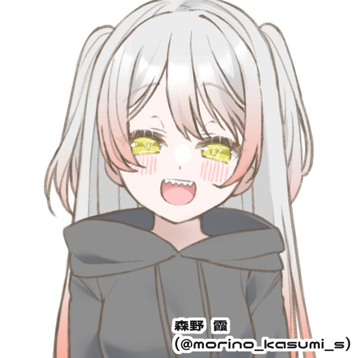
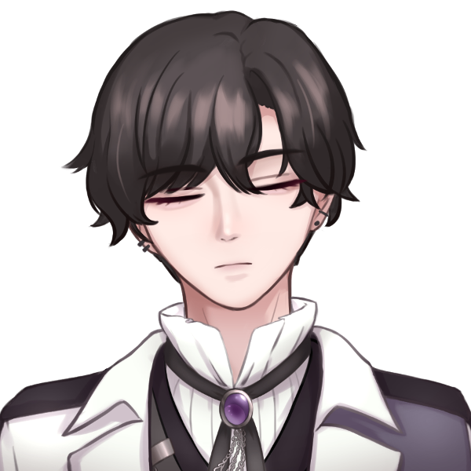

GM:方舟
メインログ /
雑談ログ
キャラシート
PC1：天海こよみ (キャラシート) PL：めい
PC2：虹之元ユメ (キャラシート) PL：雅
PC3：琵琶坂藍依 (キャラシート) PL：ふろずん
PC4：夢川めめ (キャラシート) PL：MEUR
PC5：澱カシル (キャラシート) PL：タンゴ
目次
ハンドアウト・NPC・ステージ設定
■オープニングフェイズ
00 空を失った日
01 鮮烈エンカウント
02 新星ドリーミング
03 盟約リバイバル
04 偏愛イミテーション
05 怪祟ヴィジテーション
◇PC紹介：オーディション
06/26ログ開始ポイント
ハンドアウト・NPC・ステージ設定
■PC1：アイドルオタク
ロイス：十条ミツキ 推奨感情 P: 憧憬/N: 不信感
カヴァー/ワークス : 指定なし/指定なし
キミはアイドルオタクだ。
最推しの名前は十条ミツキ。
かつてカリスマ的人気を誇った地下アイドルである。
現場に通い続けた結果、君はミツキから認知され、気に入られるほどの仲となっていた。
しかし、ある日彼女は熱愛報道で炎上。
それに伴う『卒業』と同時に、一切の消息がわからなくなってしまっていた。
ミツキの卒業から1年ほど経ったある日、キミは特別な力を自覚する。
その力を狙い、迫る魔の手。
危うく殺されかけたキミを庇ったのは、今日まで決して忘れる事がなかった最推しの彼女──UGNエージェント“クリスタルホロウ”十条ミツキだった。
※PC1へのお願い：キミには“クラッドカルト”という名の協力型のレネゲイドビーイングが取り憑きます。
彼の知能は非常に低く、会話や戦闘面での貢献等はありませんが、シナリオ中に行う「アイドル活動」において、達成値が+1d10されます。
■PC2：UGNエージェント
ロイス：“らみぃどらいぶ！”のどちらか 推奨感情 P: 好奇心/N: 嫌悪感
カヴァー/ワークス : 指定なし/UGNエージェント
キミはオーヴァードだ。
日常生活を送っていた中、不意にワーディングが使用された気配を察知する。
現場に駆け付けると、PC1を庇う形で、UGNエージェント“クリスタルホロウ”十条ミツキが交戦しているところに出くわす。
敵は、“らみぃどらいぶ！”という名の二人組女性アイドルグループだ。
キミの助太刀により、彼女らを退ける事ができたが、再度PC1を狙うかのような発言を残していった。
戦闘経験の浅いPC1を一人にするのは危険だ。
キミには、UGN芸能支部長“ミスター・オーメン”より、PC1の教育係としての任務を与えられる。
……それは良いとして、アイドルになれってどういう事？
■PC3：UGNエージェント・イリーガル
ロイス：“ミスター・オーメン” 推奨感情 P: 連帯感/N: 不信感
カヴァー/ワークス : 指定なし/指定なし(UGN関係者)
キミは元アイドルのオーヴァードだ。
何かしらの理由でアイドルを引退した過去がある。
芸能界から離れ、UGN所属のオーヴァードとしての日々を送っていたキミの元に、突然、仮面をつけた男がやって来た。
男の名はオーメン相良、またの名を“ミスター・オーメン”。
「UGN芸能支部」もとい、「UGNプロダクション株式会社」にて、支部長兼社長兼プロデューサー業を営んでいる。
作戦の一環でアイドルグループを立ち上げる為、経験者のキミに是非加入してほしいとの事だ。
■PC4：メン地下通い
ロイス：紫吹レイジ 推奨感情 P: 純愛/N: 隔意
カヴァー/ワークス : 指定なし/指定なし(UGN関係者)
キミは、メンズ地下アイドル通いをしているオーヴァードだ。
キミには担当アイドルがいる。
彼の名前は紫吹レイジ。
メンズ地下アイドルグループ「EYES ONLY」に途中加入したメンバーだ。
キミは、彼が新メンバーであった頃から目をかけているTO（トップ・オタク）だ。
しかし最近は、彼のオタクが増え、他のオタクからの牽制が強まりつつある。
こうなれば、数ヶ月後に行われるレイジの生誕祭で、誰がTOであるかを思い知らせるしかない。
勤め先(複数あるなら、そのうちの一つ)であるUGNから、かなり良い条件の任務の人員募集があった為、キミはオーディションに参加する事とした。
これはネタバレだが、キミがメン地下通いをしている(していた)事実は、後に世間に暴露される事となる。
■PC5：UGNエージェント・イリーガル
ロイス：“クラッドカルト” 推奨感情 P: 好奇心/N: 隔意
カヴァー/ワークス : 指定なし/指定なし(UGN関係者)
キミはオーヴァードだ。
キミは、何らかの理由で、“クラッドカルト”というレネゲイドビーイングを知り、これの調査を行う必要がある。(UGN日本支部その他組織からの調査依頼、“クラッドカルト”を自分の物にしたい、など)
彼のレネゲイドビーイングを取り巻く作戦がスタートする事を知り、キミはUGN芸能支部が行う任務──アイドルグループを作るらしい──のオーディションに参加。潜入捜査を開始する。
（※ごちゃごちゃ書いていますが、フリー枠という事です。なんだかんだ合流して一緒にアイドルしてくれるなら、上記の通りじゃなくても良いです）
“クリスタルホロウ” 十条ミツキ（じゅうじょう・みつき）
 「アタシ、キミを武道館に連れて行きたい。人生最高の景色を、キミと一緒に見たいんだ」
「アタシ、キミを武道館に連れて行きたい。人生最高の景色を、キミと一緒に見たいんだ」
元カリスマアイドル。空色担当。19歳。
TOXiC blueというグループの人気No.1メンバーで、エースボーカルを担当していた。
透明度の高い歌声が魅力。
気だるげな雰囲気を持つように見えるが、実は人懐っこく寂しがり屋。
ファンの事を第一に考えており、アイドルに懸ける情熱は誰より熱い。
それだけに、彼女が不祥事を起こした時の世間の衝撃は、非常に大きい物だった。

引退後はシルバーグレーのミディアムボブになる。卓中ではこっちの姿の方が長い。
TOXiC blue（トキシックブルー🔹ドクアオ）
「夜が明けるまで、キミと共に」
中毒的なまでの「青」を捧げる、ガールクラッシュ系アイドルグループ。
従来の女性アイドル「っぽさ」とは違い、愛嬌ではなくパフォーマンスで勝負するグループ。
メンバー全員が、歌やダンスなど、強く秀でた部分を持っている。
「青」というのは、夜明け前の空や、幸せや平和、青春などを表しており、人々の希望となる事をコンセプトに掲げている。
青がコンセプトなので、メンバーカラーも寒色メイン（青、空、紫、白、黄）。ペンライトが付くと会場が綺麗な感じに光る。
「夜」「夜明け」「雨」などがキーワードとなるかっこいい曲が中心だが、たまに「青空」っぽい清楚系統にも手を出す事がある他、夏になると1曲だけやたら元気な曲を出す恒例行事がある。
アイドルとしての十条ミツキ（長い）
在籍期間：3年
年齢：15〜18歳(※シナリオ時点では19歳)
メンカラ：空色担当
空と書いて「カラ」と読む、突き詰めていえば透明担当。ペンライトの色は水色。
ソロ曲：Drop in the Moon
正確に言えばソロではないが、歌割りが多め。作詞はミツキ自身が行なっている。
「アタシが輝けているのはキミたちがいるから」「ずっと一緒にいようね」といったニュアンスの内容が歌われる、バラード風の曲。
来歴：
アイドルとなったきっかけは、顔の良さからいわゆる「ビジュアル枠」としてスカウトされ、「なんとなく」始めた事。
アイドルに対する興味こそあれどやる気はなく、パフォーマンスも凡庸であった。
しかし、初めてステージに立った際に、応援してくれるファンができた一方で、「ミツキは顔だけで他はいまいち」と感想を言われた事で逆に火がついた。
そこから猛練習を重ね、特に「歌」のスキルを重点的に強化。
そして、デビューから1年ほど経った頃、現場に来るファンの「すごいカリスマ性を秘めた子がいる」という口コミなどから爆発的にファンが増加。
特に、現場に来たファンについては惹きつけて離さない、人気No.1のメンバーとなった。
外見：
身長160cm。華奢な体格。
ボブ風のウルフヘア・通称クラゲヘアと、透けるようなハイトーンの髪色が特徴。野外フェス時など、太陽に透けた時は不思議と虹色に見える。
伏し目がちの長いまつ毛と、そこから覗く澄んだ瞳が綺麗。
内面：
「アイドル」である自分に対するプライドとストイックな発言、クールな表情と佇まいから誤解されがちだが、決して天才ではない。
その為、たまにどこか抜けた一面を見せる事がある。
また、最初の頃に「顔以外いまいち」だと評価された事をいまだに引きずっている様子で、少しだけ自信なさげ。
そんな自分を肯定してくれるファンの為、少しでもパフォーマンスを向上させたいと言う。
メンバーは、「ミツキには本当に不思議な魅力がある」と評価しつつ、彼女の横に立てるメンバーになるために頑張る、と良い刺激を受けている様子。
自分に対しては厳しいが、ファンに対してはかなり甘い。
少しでも愛されるグループを作れるよう、自分のパフォーマンスの向上はもちろんの事、アイドルグループ運営や作詞に関する勉強も進めていた。
“らみぃどらいぶ！” あみぃ・らむね

 「可愛いは正義って言葉、あたしだーい好き♡」「らむ達の方が可愛いって事だもんね」
「可愛いは正義って言葉、あたしだーい好き♡」「らむ達の方が可愛いって事だもんね」
二人組のアイドル兼晒し系配信者。黒い方が「あみぃ」、白い方が「らむね」。共に15歳。
絵に描いたようなクソガキ。若さゆえに恐れ知らず。
普段は暴露配信をして日銭を稼いでおり、ファンサービスの一環でアイドルをしている。
ネットの一部では有名。ファン達は、彼女が好き放題暴れる姿にカタルシスを感じたり、アンチのような立場のプロレスを楽しんだり、保護者のようなスタンスで見守ったりしている。
らみぃどらいぶ！（らみぃどらいぶ🚔らみどら）
「人生って最高！あたし達は最強！」
『無敵』になりたい2人組を優しく見守る、現在進行系黒歴史クソガキアイドルグループ。
アイドル専業ではなく、晒し系配信者としての活動がメイン。
その為、芸能事務所には所属しておらず、衣装やヘアメイクはメンバー自らが行っている。楽曲はネットのクリエイターらに自ら依頼して作成してもらっている。
インターネット発らしいアップテンポな曲調と、世間知らずの10代だからこそ歌える強気すぎる(痛い)歌詞が特徴。
ただ、楽曲作成の依頼先がアイドルソングに慣れておらず、ダンスと並行して歌う事を前提としていない難易度である事から、ライブ中は基本的に被せ(声付きの音源をBGMに流す)に頼っている。
その代わり、ファンへの煽りやコール＆レスポンス、ヘドバンやモッシュの指示によって、最終的に謎の一体感があるステージを作り出している。
“ミスター・オーメン” オーメン相良
 「まだ、『アイドル』を諦めていないのだろう？」
「まだ、『アイドル』を諦めていないのだろう？」
支部長兼社長兼プロデューサー。年齢不詳。
顔に仮面をつけており、大変胡散臭い。会話も通じない。仮面は感情に合わせて変化する。
過去の経歴は不明だが、プロデューサーとしての手腕はピカイチと言われている。滅茶苦茶に見える采配を行いながら、不可能である事も可能にする。
『アイドル』を通じ、皆を幸せにしたいという信念を持っている。
紫吹レイジ（しぶき・れいじ）
 「君は意外と欲張りさんだね？」
「君は意外と欲張りさんだね？」
メンズ地下アイドル。22歳。
「EYES ONLY」のメンバー。ディープバイオレット担当。「魅せる」ダンスが得意であり、器量よし、性格よしの理想の推し。
グループのお兄ちゃん的存在。ファン対応も非常に優しく、包容力があるが、一定の距離以上には踏み込ませないミステリアスな男。
しかし、TOであるPC4に対しては多少心を開いている様子で、誘えばプライベートを使ってライブに来てくれる。
EYES ONLY（アイズオンリー🧪アイオン）
「後戻りの許されない旅へ」
禁忌に触れる科学者をモチーフとした、ヴィジュアル系メンズアイドルグループ。
このグループの曲は、単体として聞けばどこか捉えどころのない物ばかりだが、実はとある一つの物語を描き続けている。
コンセプトである「科学者」は、その物語の主人公。彼の研究目的は、「愛」という物の存在証明。
愛を知らぬ彼は、非人道的な研究を行いながらも、自身の知識的欲求を満たす為の旅を続けている。
ファンは、彼の旅に同行する助手であると仮定されているが、研究に関わる事が許されていない。ゆえに、ファンネームは、閲覧のみを許された存在である『EYES(アイズ)』。
なお、結局は地下アイドルであり、考察勢も少ない事から、この要素はほとんどのファンからスルーされている。
このグループが特に評価されているのは、「ダンスパフォーマンス」である。
白衣をモチーフとしたロングコート衣装を纏いながら、アクロバットをしてみせるメンバーや、表情から指先まで管理された「惹きつける」演技をみせるメンバーなど、表現技法も多岐に渡る。
アイドルとしての紫吹レイジ（長い）
在籍期間：8ヶ月ほど
年齢：22歳(大学生)
メンカラ：ディープバイオレット担当
来歴：
アイドルとなったきっかけは、街中でのスカウト。
当時、バイトを辞めた直後であったこと、且つ大学での研究を通じ、舞台そのものに興味があったことから、そのスカウトを受け入れたと語っている。
ステージ上では、繊細な表情管理や、指先までに込められたダンスの表現が好評。
体力自慢というわけではなく、激しいダンスをする事はないが、アイオンの曲に良く似合う仄暗いセクシーさがある。
日々のダンス練習に加えて「こうすればより良く見えるのでは」と研究を重ねているとの事。
他のメンバーの発言から、有名大学の文学部に通っているという事が判明しているが、それ以上のプライベートや経歴については、TOですら知らない。
仮にストーキングしたとしてもいつの間にか撒かれる、ある意味完璧な『アイドル』。
「EYES ONLY」自体が4年ほど続いているグループであり、それぞれのメンバーにファンがいる中での新規メンバーであった事から、加入当初はそこまで人気がなかった。
しかし、最近は「ビジュが良い、なんかエロい」「プライベートの管理がしっかりしてて推せる」と評判となり、じわじわとファンが増えている。
外見：
身長186cm。手足が長く、股下5mくらいある気がする。
黒髪。前髪は長め。やや彫りが深く、二重幅も広い、あまり日本人的ではない容姿。
どこか王子様風な外見と振る舞いから、ファンや一部メンバーからは「レイ様」とも呼ばれている。
内面：
一人称は「僕」、二人称は「君」。
思慮深く、周囲を俯瞰してよく見ている。
加入当初はどこかピリついた雰囲気を持っており、メンバーから怖がられていたが、様々な場面で気を回す姿から「いい人なのかも」と打ち解け、頼りにされるようになった。
別に最年長というわけではないが、しっかり者としてお兄ちゃん扱いされている。新メンバーでありながら、MCを担当する事も多い。
ステージ上や特典会、SNSでのライブ配信などでは、ミステリアスでクールな、Sっぽいキャラ。ナルシスト的な発言もよく見せる。
ただ、決して堅物ではなく、ライブのMCなどでは、ネタの一環で他メンバーをお姫様扱いするなど、キャラを崩さないままふざけた行動を取ることがある。
ファンの顔をすぐに覚える。サービスもよく、服装の細かいところに気づいて褒めたり、チェキ撮影時にさりげなく抱き寄せたりなど、乙女心を躊躇なく刺激する。
“クラッドカルト”
PC1に取り憑いたレネゲイドビーイング。
宿主とされた者は、否応なしに人の注目を集める事となる。それ以上の情報は不明。
画像は特に関係のない麗はゅ。ちゃんです、PC5のシナリオロイスから降格して使い所がなくなった立ち絵①です。
クラッドカルトには実体を持たないので、立ち絵はありません。寂しいからはゅを添えます。
■オリジナル設定
・「UGN芸能支部」について
UGNエージェントのみで構成された芸能事務所。
FHのアイドルグループ「ファムファタール」の台頭に対し、危機感を覚えたUGN日本支部が設立した。
表では「UGNプロダクション株式会社」という名で通っている。
社名の由来は、所属タレントに大切にしてほしい3つの言葉（ユニーク、ガッツ、ネクサス）。
FHの後追いで始めた事業であり、設立から1年も経っていない事から、業界でもUGN内でも名が知られていない。
また、UGN内でも謎の組織として扱われている様子で、支部長であり社長でもある”ミスター・オーメン”ことオーメン相良についても、経歴が明かされていない。
・「アイドル活動」について（仮）
フレーバー要素。
シナリオ中にある「ライブ」や、任意のタイミングで判定を行い、描写の説得力が増すかもしれないし増さないかもしれない判定。
通常の戦闘と同じく、達成値もしくは攻撃力で判定を行う。あまり深く考えないで良いです。
また、回数制限のあるエフェクトについては、戦闘とは別カウントとする。
以下、GMが何となくこういうイメージだな～と振り分けてみたけど全然無視してほしい要素。GMも多分無視する。
肉体：ダンス（体力面全般、視覚的な「かわいい」「カッコいい」）
感覚：歌（音楽的センス）
精神：表現力（ラップパート、表情管理など）
社会：愛嬌（物販時の対応など）
・「エゴサーチ」について
フレーバー要素。
常に設置予定の情報項目。
基本的に情報を出す予定はないが、GMの気分次第で情報を出したり出さなかったりするかもしれない。侵蝕値調整にどうぞ。
メインプレイ
シーン0 空を失った日
ライブハウス
GM :
都内某所、ライブハウスにて。アイドルオタクであるキミは、推しグループの登場を最前列で待ちわびていた。
GM :
グループの名は「TOXiC blue」。
GM :
最近ではSNS上で名が広く知られ、テレビでも取り上げられるようになった、今注目の「地下」アイドルグループだ。ワンマンライブであるにも関わらず、ライブハウスを埋める人間の多さが尋常ではない。
天海こよみ :
「…………」 もう何度も来ているのに、そわそわしながら今か今かと待っている
おまいつのオタク :
「あ、こよみちゃん！お疲れ！」
GM :
キミがそうして待っていると、すぐ近くにいた別のオタク……「お前らいつもいるな」、すなわち、『おまいつ』である常連のオタクが話しかけてくる。ちなみに、彼女は白担当推しだ。
天海こよみ :
「あ……。おつかれさま……！」 常連で知った仲なので、警戒することなくそちらを向いて返事をする
おまいつのオタク :
「いえいえ……この間ランチェキ買ったらミツキ出たんだよね。良かったらどうぞ！」
そう言って、チェキを渡してくる。ちなみに、ランチェキというのは、ランダムチェキ……すなわち、誰が出るのかわからないチェキの事だ。
天海こよみ :
「え……！？い、いいの……？」
おまいつのオタク :
「もちろん！」笑顔で頷く
天海こよみ :
「ありがとう……！うれしい……」 小さく笑いながらチェキを両手で受け取る
天海こよみ :
「あの、今こうかんでわたせそうなのないんだけど……今度何かお返しできるように、おぼえておくね」
おまいつのオタク :
「全然大丈夫だよ、若いんだし気にしないで～」笑って手を振る
おまいつのオタク :
「それにしても、ミツキってどんどん良くなってるよね…推し変しかねないな～」
おまいつのオタク :
「……なんてね！！言ったら推しに怒られちゃうから、今のは内緒だけど！！」
天海こよみ :
「ふふっ……してもいいんだよ……」
天海こよみ :
ミツキが褒められるとまるで自分のことのように嬉しくなり、唇が緩む
おまいつのオタク :
「えぇ～、流石にそれはやばいって……」
GM :
談笑しているうちに、ふっと会場の照明が落ち、BGMのボリュームが下がる。開演の合図だ。
おまいつのオタク :
「あっ…！ごめん、またね！」そう言って定位置に帰る
天海こよみ :
「あ……。うん、また……！」
天海こよみ :
貰ったチェキをポシェットの中に急いで入れ、ペンライトを持ってステージの方を見る。
GM :
夜明けを知らせる鐘の音に続き、入場BGMが鳴る。
GM :
青い光に満ちたスモークの向こう側に、カツ、カツ、とブーツのヒールを鳴らしながら、5人の偶像(アイドル)達が並ぶ。
GM :
センターに立つ影……スラっとした体躯に、クラゲのようなシルエットをした特徴的なヘアカット。威風堂々たる立ち姿。その影が、息を吸う。

十条ミツキ :
夢なんてきっと醒めてしまうから
キミがいる 明日を共に生きたい
GM :
熱気に満ちたライブハウスを『青』へと誘う、奇跡の歌声。同時にブチ上がるBPM。
GM :
ハートに響く声、体中に満ちる高揚感。
カッと焚かれたハイライトに照らされるキミの推し……十条ミツキが、客席を見てふっと口角を上げる。
十条ミツキ :
「TOXiC blue、最後まで全力でいくよ！！」
天海こよみ :
「……！！」 青で満たされた世界に舞い降りた推しを前に、心臓がドクンと高く鳴って
天海こよみ :
「きゃああああああ！！！ミツキちゃーん！！！！！」
天海こよみ :
儚く華奢な見た目や、さっきまでのか細い声からは想像も出来ないような声で叫ぶ
GM :
キミの声と同時、ワッ、という声と共に彼女のオタクがペンライトを振りかざす。
GM :
今夜もまた、最高のステージが幕を開けたのだった。
GM :
──時間にして1時間。楽しいライブが終わるのはあっという間だ。
ステージのアイドル達は、肩で息を吐きながら、それでも客席に向かって笑顔を見せている。
GM :
だが、地下アイドル……「会える」アイドルの魅力とは、ここで終わるものではない。
白担当 :
「今夜もありがとうございましたぁ！この後の特典会に参加される方は、スタッフの指示に従って、並んでお待ちくださぁい」
GM :
『特典会』。アイドルとチェキを撮ったり、チェキに落書きをしてもらえたり、会話が出来たり……さらには顔を覚えてもらえるかもしれない、奇跡のイベントだ。
GM :
それぞれのアイドルが掃けていく中、ふとミツキが観客席を……いや、間違いなくキミを見る。
十条ミツキ :
「また後でね～」
GM :
その後すぐに目線を離し、手を振りながらステージ脇へと消えていった。
天海こよみ :
「……！」
天海こよみ :
「え、えへ……えへへへ……」 にやけてしまう顔を抑えるように、両手で頬を支えている
天海こよみ :
「…………。はぁ……」 その後、ため息しか出来なくなる
GM :
特典会では、他のメンバーも人気があるが……やはりミツキの列の人数は半端ではない。
GM :
おまいつも居るが、ライブの度に新規のファンが増えているのだ。
GM :
ミツキは、他のファンとも楽し気にチェキを撮り続けている。
GM :
こうして待っているうちに、自分の番がやってきた。
スタッフ :
「次の方、どうぞ～」
天海こよみ :
「は、はい……！」 もう数えきれない位何度も来たのに、少し緊張しながら返事をして進み出す
GM :
ミツキは、そんなキミを見てふっと笑う。
十条ミツキ :
「いらっしゃい。もう、また緊張しちゃって……」
おいで、と手招きをする。
天海こよみ :
「だ、だって、だって……」 ちょこちょこと小さい歩幅で近付いて行って
天海こよみ :
「今日のミツキちゃんも、すっごく良かったから……」
十条ミツキ :
「ほんと？嬉しい……でも、それじゃあ一生こよみは懐いてくれないかもね」そう、すまし顔で呟く
天海こよみ :
「え……！？で、でも……なついてる！こんなだけど、なついてるよ！！」
天海こよみ :
「飼われたいくらいなついてるから……！！」 慌てて変なことを大声で言ってしまう
十条ミツキ :
「……！ふ、ふふ……！！」
GM :
おかしそうにくすくす笑いながら、こよみをぎゅっと抱きしめる。
十条ミツキ :
「冗談だよ、冗談…！こよみ、前よりずっとずっと明るくなったもん…！」
天海こよみ :
「え、あ、あぇ」 抱きしめられて顔が熱くなって
天海こよみ :
「そ、そう……か、な……？」
十条ミツキ :
「うん！今の方がず～っと可愛いよ！大好き！」そう言って、背中をぽんぽんする。……それこそまるで、飼い犬を相手にするかのような甘やかしっぷりだ。
天海こよみ :
「……っ！」
天海こよみ :
「ぼ、ぼくも……」
天海こよみ :
「ぼくも、ミツキちゃんのこと、大好き……！」 上目遣いでミツキの顔を見ながら、嬉しさで震えた声でそう伝える
十条ミツキ :
「……！」その言葉に軽く目を見開いてから、にこっと嬉しそうに笑った。
スタッフ :
「……み、ミツキさ～ん……」カメラを持ったスタッフが、戸惑い気味に声をかける。
十条ミツキ :
「……あ。そ、そうだ、チェキ！今日、どんなポーズにするか決めてきた？」
天海こよみ :
「あ……！え、えっと……！」
天海こよみ :
「えっと、えっと……」
天海こよみ :
「あ、あれ、なんだっけ……。き、きめてたんだけど……」
天海こよみ :
目を伏せて、口籠る。ちゃんと考えてきたのに、ハグして大好きだと言ってくれた嬉しさで完全に頭からすっぽ抜けてしまっていた。
十条ミツキ :
「……もしかして忘れちゃった？」
天海こよみ :
「…………」 しゅんとしながら小さく頷く
十条ミツキ :
「そっか……1現場1枚だもんね、う～～ん……」悩むように目を閉じてから、ぽんと手をたたく。
十条ミツキ :
「……じゃあ、こういうのは？」椅子から立ち上がり、こよみの後ろから抱き着いてカメラに向かう。
天海こよみ :
「え……！？」
天海こよみ :
「あ、え……！？」 あわあわしながら視線が泳ぐ
十条ミツキ :
「はーい、じゃあお願いしまーす」意地悪そうに笑いながら、カメラマンに声をかける。
十条ミツキ :
「はい、チーズ！」そう言いながら、自分の頬をこよみの頬に付けて微笑む。
天海こよみ :
「わ……わ……！」
天海こよみ :
「んへへ……」 緊張や嬉しさで頭がバグってしまったのか、赤面しながらにへっと笑う
GM :
ぱしゃ、とシャッターが切られる。カメラから出てきたチェキは、軽く乾かされた後、ミツキの元に渡る。
十条ミツキ :
「ありがとうございまーす……どう？今ので良かった？」撮ってから聞くのは変だけど、と首を傾げる。
天海こよみ :
「…………」 チェキをジッと見て
天海こよみ :
「く……」
天海こよみ :
「くっついちゃってる……！ほっぺた……！！」 チェキとして写ってるのを見て、興奮度が上がってしまってる
十条ミツキ :
「ふふ、最初はこうするつもりなかったんだけど…なんか、こよみがあんまりにも可愛かったから」笑いながらサインペンを手に取り、凄まじいスピードでサイン、落書き、メッセージを書いていく。
天海こよみ :
「か、かわい……かな……。そうかな……」 嬉しすぎてちょっと俯いて
天海こよみ :
「で、でも、ミツキちゃんの方が……！かわいい……！よ……！！」
ミツキを見上げ、両手で小さく作った拳を胸の前に持ってきながら、力強く言う
十条ミツキ :
「やだ、流石に説得力ないって……今のこよみ、なんかハムスターみたいだもん」くすくすおかしそうに笑いながら、落書きにハムスターの絵を追加した。
天海こよみ :
「そ、そう……？ふふっ……」 かわいい、とハムスターの落書きを見て笑う
十条ミツキ :
「うん……こんな可愛い子が応援してくれてるんだもん。もっと頑張らなきゃって思うよ」
天海こよみ :
「……ミツキちゃん、もう十分がんばってるけど……」
天海こよみ :
「でも、ぼく……おうえんしてる……！これからもずっと、いっぱい……！！」
十条ミツキ :
「嬉しいな…そこまで言うなら一生推してよね」できた！とチェキを差し出しつつ、言葉を続ける
十条ミツキ :
「……アタシ、キミを武道館に連れて行くよ。人生最高の景色を、キミと一緒に見たいんだ……だから」
十条ミツキ :
「これからもよろしくね、こよみ」
天海こよみ :
「……！うん……うん……！！」 チェキを受け取り
天海こよみ :
「ぼくもいっしょに見たい……武道館でライブするミツキちゃん……」
天海こよみ :
「だから、あの、えっと……」
天海こよみ :
「まかせて、ぼく、ミツキちゃんのこと、一生推すから……！」
天海こよみ :
「こちらこそ、よ……よろしくおねがいしましゅ……っ！！」 言いたいことに感情が追いついてなくて、最後に噛んでしまってる
十条ミツキ :
「……ふふ……！」こよみの姿に愛しさが溢れたのか。最後に、もう一度強くハグをする。
十条ミツキ :
「うん！……ありがとう、本当に大好きだよ」囁いてから、離れる。
天海こよみ :
「う、うん……うん……！！」 こくこくと頷いて
天海こよみ :
「じゃ、じゃあ、またね、ミツキちゃん……！また、来るね……！！」
天海こよみ :
名残り惜しいが、次の順番の人の邪魔にならないように離れて行く。最後まで小さく手を振りながら。
十条ミツキ :
そんなキミに、ミツキもまた小さく手を振り返す。
GM :
これが、キミがミツキと送った『非日常』に近い『日常』の日々であった。
天海家 こよみの部屋
GM :
……それから、数か月経った頃。
GM :
こよみがSNSを開くと……ドクアオで繋がったフォロワーたちの様子が騒然としている姿が見られる。皆、主語ははっきりとさせないが……明らかに、様子がおかしい。
TLのオタクたち :
「どういうこと？」「ミツキが？」「嘘」
天海こよみ :
「……？」 自室のベッドに寝転がりながら、スマホをたぷたぷしてSNSで情報を探す
GM :
そうしていると、キミはあるネットの記事にたどり着く。記事の見出しはこうだ。
GM :
『TOXiC blue・十条ミツキ 絶対的エースの熱愛疑惑浮上！』
GM :
……そう。マスコミによって、キミの推し……十条ミツキの熱愛報道が暴露されたのだ。
天海こよみ :
「…………」
天海こよみ :
「え………………？」
天海こよみ :
「え、なに、え……？」
天海こよみ :
記事の見出しが目に入った瞬間、思考が固まってしまう。
天海こよみ :
数秒間硬直した体を動かしたのは、"ミツキちゃんがそんなことするわけない"という感情。
天海こよみ :
「うそでしょ……？で、でたらめ……書かないで……！！」
天海こよみ :
こんな嘘を書いて報道してることに怒りを覚えながら、一応ネットの記事を詳しく読みます。
GM :
では。
GM :
記事の内容は簡潔だった。ミツキが熱愛をした、ただその『事実』が、大量の証拠写真と共にあった。
GM :
証拠写真は、残酷なほどに画質が良かった。彼女は、年上らしい男性の手を引き、歓楽街を歩いている。
GM :
彼女は帽子や眼鏡など、変装すらしていない。
GM :
……思えば、演者の彼女はいつも堂々としていた。パフォーマンス中はもちろん、特典会中だって、凛とした態度を崩す事はなかった。
GM :
だが、写真の中の彼女は違った。
GM :
触れれば壊れてしまいそうな、繊細さのある笑み。
口元はきゅ、と結ばれ、まるで緊張しているようにも見える。
GM :
『十条ミツキ』と同じ顔で、知らない顔。
GM :
彼女は、男と共に、ホテルの中へと消えて行った。
GM :
……記事は、「本件について、事務所からの回答は未だにない」という言葉で締めくくられていた。
天海こよみ :
「…………………………………」
天海こよみ :
鮮明に映ってる数々の証拠写真が、目に飛び込んできて。
天海こよみ :
自分の知らない十条ミツキがそこにいたという事実が、目の奥を突き抜けて頭の中を抉るように襲い掛かる。
天海こよみ :
「うそ……」
天海こよみ :
彼女が消えていった建物は初めて見るし、そういった知識にまだ詳しいわけではない。
天海こよみ :
でも、そこでどんなことをするのかは、何となくだが分かっている。
天海こよみ :
「そんなわけない……」
天海こよみ :
「ミツキちゃんが……そんなこと……」
天海こよみ :
視界の端に、いつの間にか手から滑り落ちたスマホの画面が見える。SNSのタイムラインがずっと更新され続けている。
天海こよみ :
「…………」
天海こよみ :
震える手で、スマホを持つ。細い人差し指で画面をタップする。
天海こよみ :
そして、一言だけメッセージを投稿する。
天海こよみ :
『ぼくはミツキちゃんのこと、しんじてる』
天海こよみ :
スマホをまたベッドに落とすと、体から力が抜けたように枕に顔を埋める。
天海こよみ :
そのまま、不安に押しつぶされるようにしながら動かなくなってしまった。
GM :
……こよみの投稿は、さらに増えていく投稿たちに押し流されていく。
GM :
公開された写真があまりに衝撃的だったのか。世間的に見たら小さいはずの火種が、深夜のSNSではあっという間に燃え広がった。
GM :
ファンによる戸惑いの声は勿論のこと、外野からの「『偶像』名乗ってる癖に生々しいとこ見せんなよ」「プロ意識が無いから地下なんだよね」「誰？(笑)」といった冷たい声も多く飛んだ。
GM :
地下の中では人気だが、日常的に見る事はない「TOXiC blue」の名は、トレンド欄ではあまりにもよく目立った。
GM :
炎上から半日経った頃、TOXiC blueの公式アカウントより謝罪文が公開された。
GM :
「この度は所属メンバーである『十条ミツキ』の件で、世間を騒がせてしまい申し訳ございません。報道の内容は事実です」「事務所は、かねてより十条より恋人ができた事について本人より報告を受けており、卒業に向けて話を進めていました。その為、このような形で情報が公開されてしまった事は想定外でした。対応が遅れており、大変申し訳ございません」
GM :
「十条ミツキ」の公式アカウントからは、「ファンを裏切るような真似をしてしまい、申し訳ございません。」という、短い謝罪文が上がった後、沈黙。
GM :
後日、彼女の卒業ライブを行う事が決定した。
GM :
……ここで、こよみさんに選択して欲しい事があります。
今後の展開には影響はないので、あまり深く考えなくても大丈夫です。
GM :
卒業ライブに行きますか？
天海こよみ :
いき…い、いき……
天海こよみ :
行きます…！！
GM :
了解です。では、話を進めます。
ライブハウス
GM :
卒業公演、当日。運営が期待したほどの動員が無かったのか、普段よりも大きいキャパシティのホールの全てが埋まる事はなかった。
GM :
ミツキのファンであったオタク連中の姿も、ほとんど見られない。皆、他界※してしまったのだろうか。
※オタクをやめる事。担降り。
天海こよみ :
「……人、少ないな……」
天海こよみ :
普段なら、おまいつのオタク達に「こよみちゃん来たよ！」と迎えられて、始まるまで楽しくお話してたのに。
天海こよみ :
今日はとぼとぼと一人で歩きながら、しかし出来る限り最前の方へと向かって行く。
GM :
以前声をかけてくれた、白担当推しの子もいない。これまでになく、寂しい現場だった。
GM :
……だが、いつもより閑散とした現場であっても、TOXiC blueのパフォーマンスは素晴らしい物だった。
GM :
肝心のミツキは、やはり元気のない様子であったが、他のメンバー達は彼女を支えるようにして歌い、踊る。
GM :
何としてでも、ミツキの最後のステージを良いものにしたい……そのような、願いが籠っているようだった。
GM :
MCで卒業について触れるメンバーの言葉も、思いのほか優しかった。

青担当 :
「私達からも、みんなに謝らなきゃいけないんだ。ミツキに彼氏が出来たって話、ちょっと前に聞いてて…」

白担当 :
「わたしは最初、アイドル一生続けるって言ってた癖に何考えてんの、わたしと一緒に武道館立つより大事なの？って…でもぉ…」

黄担当 :
「彼氏持ちでもいいじゃん！って引き止めたのはウチらだったんだ。……だから、こうなったのはミツキだけのせいじゃない」
紫担当 :
「……でも、ミツキは真面目で意地っ張りだから…」
十条ミツキ :
「……！…」ミツキはメンバーを見て何か言おうとする……が、そのまま口を閉ざし、メンバーに背を向ける。
GM :
その姿を、メンバーは不安そうな目で見ていた。
GM :
ミツキはステージの縁に立ち、会場を見渡す。
十条ミツキ :
「このような形で裏切る事になり……申し訳ありませんでした。メンバーや運営、スタッフさん、アタシのファンにも、他のみんなのファンにも、本当に嫌な思いをさせました」
十条ミツキ :
「今日まで、アタシをアイドルで居させてくれてありがとうございました。……幸せ、でした」
GM :
そう言って、客席に向かって頭を下げる。
天海こよみ :
「……ミツキちゃ……ん……」
天海こよみ :
────ずっと、最後まで信じていた。
天海こよみ :
全て嘘で、何か自分には想像も出来ないような複雑な事情があって。
天海こよみ :
卒業ライブとは言っているけど、ミツキちゃんが本当のことを教えてくれるのだと思っていた。
天海こよみ :
でも、目の前の現実はそうではなくて。誰も事実を否定しない、ありのままの真実だけが流れて行く。
天海こよみ :
「…………っ」
天海こよみ :
残酷な現実も嘘偽りない真実も、全てが冷たい刃物のように突き刺してきて……頭の中が真っ白になって何も言うことが出来なかった。
GM :
他のファンも、同じ気持ちなのだろう。まばらながら、拍手の音がして……それも、すぐに消えた
GM :
ミツキは、一度口をきゅっと結んだ後、言葉を続ける。
十条ミツキ :
「……最後の曲です。『Drop in the Moon』」
GM :
……綺麗な歌声だった。音を外さず、いつもよりも丁寧に歌っている。だが、『それだけ』だ。魂が震えない、義務のような歌い方だ。
GM :
背後で、他のファンのひそひそ話が聞こえる。
ファンの声 :
「ねえ……ミツキ、態度悪すぎない？あんな迷惑かけた癖に」
ファンの声 :
「思った。今日で終わりだからいいけど……辞めてくれて正解だったかもね」
GM :
……そして迎える、最後の特典会。
GM :
演者から余計な発言が出ないよう、管理する為か。チェキの落書きは会場で行わず、希望する者には後日郵送するという形を取るようだ。
GM :
すなわち、接触できる時間はチェキが撮られている間のほんの数十秒。……気づいた時には、『推し』はあなたの目の前で待っていた。
十条ミツキ :
「……こよみ…」
天海こよみ :
「……ミツキちゃん……」 よたよたと、倒れそうになりそうな力のない足取りで近付いていく
十条ミツキ :
「……っ…」それを支えようと手が動きかけるが……その場で黙ってこよみが来るのを待つ
天海こよみ :
「……ほ、ほんとに……」
天海こよみ :
「ほんとに、やめちゃうの……？アイドル……」 最後なのに目を合わせられず、俯きながら
十条ミツキ :
「……」沈黙。これが肯定を示している事は…幼いキミであっても理解する事ができるだろう。
天海こよみ :
「そっか……。そ、そう……なんだよね……」
天海こよみ :
「……チェキ……とる……？」
十条ミツキ :
「……ごめん。…そう、だね」
十条ミツキ :
首を横に振り、小さく微笑む。
十条ミツキ :
「今日は……どうするか、決めてきた？」
天海こよみ :
「……あの……。何ヵ月か前の、あのポーズ……好きだったから……」
天海こよみ :
「ほっぺた、くっつけるやつ……」
十条ミツキ :
「……わかった。あれ、しようか」席を立ち、こよみを後ろから抱きしめる。
十条ミツキ :
だが、どこか以前よりもよそよそしい。まるで、触れる事を拒否しているような。
十条ミツキ :
出会ったばかりの頃より、距離を感じる。
天海こよみ :
「…………っ」
天海こよみ :
「だめ……」
天海こよみ :
そう一言、小さく呟くと。
天海こよみ :
抱きしめるミツキの腕を振り払って、彼女から離れてしまう。
十条ミツキ :
「……！」小さく、驚いたように体を動かし…素直に、離れる。
十条ミツキ :
「……どうしたの？」
天海こよみ :
「…………」 ずっと目を逸らし、俯かせていた顔を上げる。その頬には、涙が伝っていた。
天海こよみ :
「ご、ごめん……ぼく……やっぱり……」
天海こよみ :
……このチェキを撮ったら、本当に全部終わってしまうような気がしたから。
天海こよみ :
「ごめん……ごめんなさい……っ！」
天海こよみ :
────最後までちゃんとしたファンでいられなくて。
天海こよみ :
か細い声ではそこまで言葉は続けられず、泣きながらその場から逃げ出してしまう。
十条ミツキ :
「……！！こよみっ……」声を上げかける……が。そのまま、手を降ろす。
GM :
……これが、キミの幸せな『非日常』の終わり。ミツキとの、最後の記憶だった。
GM :
シーンエンド
シーン1 鮮烈エンカウント
天海こよみ :
1d10+34(1D10+34) ＞ 1[1]+34 ＞ 35
住宅街
GM :
卒業公演から、1年が経った頃。
GM :
ミツキの起こした不祥事、それに伴う卒業がきっかけとなり、あなたは、引きこもり生活に逆戻りしていた。
GM :
たまの散歩だけが、外界と接する唯一の機会だ。
GM :
暗いだけの日々。青空なんて嘘っぱちだ。
GM :
それでも、一か月に一回を目安に、キミは外に出る日を設けていた。
GM :
だが。最近は、そう悪い事ばかりでもない………気が、する。
GM :
外に出る度に、何やら人から親切にされるようになったのだ。
GM :
例えば、買い物をした時におまけを貰えたり、近所の子ども達に遊んでほしいとせがまれたり。
GM :
これは全く嬉しくないだろうが、ナンパされる頻度も妙に高い。
GM :
対象は老若男女、動物すら問わない。
GM :
今だって、キミの足元には、懐いてきた野良猫がすりすりと近づいてきている。
天海こよみ :
「あ……また……」
天海こよみ :
「よしよし……かわいいね……」
天海こよみ :
屈んで、足下にすり寄ってきた猫を優しく撫でる。
天海こよみ :
最近、何かがおかしいことは自覚出来てきたが、考えてもさっぱり分からない。
天海こよみ :
ナンパしてくる知らない男の人がみんなこういう猫ちゃんだったらいいのに……なんて思って現実逃避しながら野良猫を可愛がっている。
GM :
猫は喉をゴロゴロと鳴らしながら、キミに甘える。
GM :
この小さな触れ合いをちょっとした思い出に、キミはこのまま帰るはずだった。が……
GM :
ふと、背筋をなぞられたようなゾワッとした感覚と共に、世界から音が失われる。
GM :
それと同時に、先程まで甘えてきていた足元の猫がぱたりと横になってしまった。
天海こよみ :
「……え？ね、ねこちゃん……？どうしたの……？」
天海こよみ :
突然横になったことに戸惑いながら、猫の身体を手でゆする。
GM :
触れてみると、温もりを感じる。息はあるようだが、意識を失っている。
GM :
キミは、後にこの力の名を知る。「ワーディング」をかけられたのだ。
天海こよみ :
「…………」 寝てるだけ？なことにとりあえず安心しつつも
天海こよみ :
「……か、帰ろう……」
天海こよみ :
今さっき背筋を襲った嫌な感覚から逃げるように、その場から離れようと立ち上がる。
GM :
その時だった。
？？？ :
「あ、いたいたぁ」
GM :
緊張感のない声と共に、二人の少女が住宅の屋根から飛び降りてくる。
GM :
片方は、どこか快活そうに見える少女だ。黒髪を三つ編みにし、輪にするようにして留めた特徴的な髪型をしており、どこか勝気な表情をしている。
GM :
もう片方は、前者と比較的おとなしそうにも見える少女。白髪で、ボブヘアの横に羊の角を彷彿とさせるお団子をつけている。大人しそうではあるが、目元はにやにやと細められている。
GM :
両者ともに、私服と言うには個性的すぎる、チャイナ風のロリィタ服を身に纏っていた。
GM :
彼女らの名は、"らみぃどらいぶ！"。ここ一年半ほどで名が知られ始めた、2人組の晒し系配信者。最近はアイドル活動も始めたらしい。
GM :
GMとしての連絡ですが、キミは彼女たちを知っていても知らなくても問題ありません。
GM :
黒髪の少女の方が、こよみの姿をじろじろ見てから、困ったように首を傾げる。

あみぃ :
「はにゃ？本当にこの子なの？」

らむね :
「うーん、私もちょっと自信ないかも…それっぽいオーラを全く感じないもの」
GM :
二人は困ったようにうんうん唸り始める。
天海こよみ :
「え……？あ、え……？」
天海こよみ :
「あなた、達……配信者の……」
天海こよみ :
見覚えがある。昔、ネットのどこかで見たことがある。一年前からネット断ちしているから、最近のアイドル活動については把握出来ていないが……。
天海こよみ :
「……って、いうか。あの、いま……屋根の上から飛びおりて……？」 常人ではない身体能力に驚いて、二人と家屋の屋根を交互に見る
あみぃ :
「え、マジで！あたしたちのことわかるの！？」
GM :
目を輝かせながら、キミに尋ねる。屋根の上から飛び降りた云々については耳に入っていないようだ。
天海こよみ :
「え？う、うん……一応……」 勢いに押されて答えてしまう
天海こよみ :
「なんか、あの……その……」
天海こよみ :
「ちょっと、こ……はでな感じの、動画とうこうしてる……あみぃちゃんと、らむねちゃん……？」 怖い感じの、と言いかけて言葉を選んだ
らむね :
「わ……わぁ……！そ、そう、そうなの！！嬉しい、知ってくれているわ！！」
あみぃ :
「派手だって！やば、マジで嬉しいねこういうの！！」ご満悦な様子で、自分たちがしに来た事を忘れているようだ。
天海こよみ :
「え、えっと……」
天海こよみ :
「……あ。そっか、じゃあさっき飛びおりたのも動画の……なにか？ワイヤーで吊るしたりして……」
あみぃ :
「………あ」
らむね :
「そうだったわ、すっかり忘れてた……やるわね、あなた。話術のプロよ」
あみぃ :
「申し訳ないけど、今日は動画じゃないんだよね。端的に言うと……」
あみぃ :
「あんたを、攫いに来たの」
天海こよみ :
「へ……？」 きょとんとして
天海こよみ :
「…………」
天海こよみ :
「あっ。な……ナンパ……？そういう、せりふ……？」 最近ナンパされることが多いせいでそんな風に捉えてしまう
らむね :
「……あら。随分飛躍した考え方をお持ちなのね」
らむね :
「それなら……そうね。もう、こうするしかないわよね」
らむね :
そう呟くと、少し後ろに下がる。
らむね :
「『この後』も予定があるわけだし、手早く済ませてしまいましょうか」
天海こよみ :
「……？」
らむね :
らむねがバッと腕を広げる。すると、同時に、萌え袖のような衣装から爪が伸びる。
らむね :
銀の金属光沢を放つ凶悪な爪……「シザーハンズ」という洋画に出てくる怪人を彷彿とさせられる姿。

らむね :
しかし、彼女は心優しいエドワードではない。
らむね :
「悪いけど……一旦、くたばってちょうだいッ！」
GM :
小さく息を吐き、次の瞬間には肉薄。
GM :
キミの視界いっぱいに広がるフリルと、銀の煌めき。
天海こよみ :
「え……！？」
天海こよみ :
袖から伸びた爪。一瞬で迫る少女。眼前で光る鈍い銀色。
天海こよみ :
全てに対して理解が追いつかず、喉から漏れ出たのは間抜けな声だけ。
天海こよみ :
ただ、それでも僅かに働いた脳が危険を感じ取って、
天海こよみ :
────死ぬ？
天海こよみ :
そう命の危機を鮮烈に伝えていた。
GM :
妙に長い一瞬の後。
GM :
ガキンッ！
GM :
金属音が響く。キミにその刃が届く事はなかった。
GM :
目の前に割って入った影が、その一撃を受け止めたのだ。
GM :
虹色に反射する、半円状の透明な盾を構える少女。

十条ミツキ :
「キミ！大丈夫！？」
GM :
この声を、振り返ったその顔を、あなたは知っている。
GM :
十条ミツキ──あなたの最推し。トレードマークのクラゲへアじゃない、知らない彼女が、そこに居た。
天海こよみ :
「……！？」
天海こよみ :
心臓が強く鼓動する。直前に、命の危機を感じた時よりも激しく。
天海こよみ :
強張った身体から一気に力が抜けて、ぺたんとその場にへたり込んで、
天海こよみ :
「ミツキ……ちゃん……？」
天海こよみ :
見た目のイメージが違ってもすぐに分かった推しの名を、呟くように呼んだ。
十条ミツキ :
「……ッ！！こよみ……！」
GM :
驚いたように、名前を呼び返す。が、久しぶりの再会にしては登場人物が多すぎる。
らむね :
「……十条ミツキ……！？」
あみぃ :
「へえ、炎上した『元』アイドル様じゃん！『今』動けるって事は……あんたもあたしらと『同類』だったんだ！」
十条ミツキ :
「キミ達と同類か……それは……質の悪い冗談だな！！」
GM :
ミツキが盾を薙ぐように振り払うと、らむねは後方に向かって宙返りをして、体勢を整える。
十条ミツキ :
「チッ……こよみ、怪我は！？」
天海こよみ :
「え？え？だ、だいじょうぶ……」
十条ミツキ :
「……そう。それなら良かった……」小さく息を吐く
天海こよみ :
「…………。あ、あの、ミツキちゃ、えっと……」
天海こよみ :
「どういう……こと？な、なんであの人達が、爪……み、ミツキちゃんがいて……っ」 パニックになりかけて、言葉も全く纏まっていない
十条ミツキ :
「大丈夫、安心して。ほら、立てる……？今のうちに、ここから……」
GM :
ミツキが君を逃がそうとする。が、そう上手くは行かない。
あみぃ :
「はにゃ～、もっとイージーだと思ってたんだけど……しょうがないなぁ」
あみぃ :
あみぃが、手に持っていた傘を開き、軸に触れる。
あみぃ :
すると、シンプルであった傘に炎が走り、金の模様が輝く。
十条ミツキ :
「……ッ！何を……逃げて、こよみ！キミが居ていい場所じゃない！」
あみぃ :
「いいや、消えるべきはあんただよ！十条ミツキ！」
GM :
傘があみぃによって放られる。軸が駒のように回転し、地面を削り取りながらミツキに迫る。
十条ミツキ :
「く…ッ！」
GM :
ミツキが指を鳴らすと、彼女の体から抜け出すようにして2匹のクラゲが飛び出し、攻撃を防ぐ。が、攻撃を受けた途端に弾け、消えてしまった。
天海こよみ :
「……！？」
天海こよみ :
「み、ミツキちゃ……っ！」
天海こよみ :
未だに何が起きているのか、頭の理解が追いついていない。
天海こよみ :
だから、ミツキに言われた通りにこの場から早く逃げるべきなのだろう。
天海こよみ :
「あ……ぅ……」
天海こよみ :
が、しかし。
天海こよみ :
訳が分からなくても、命の危機というのは感じ取れてしまっている。
天海こよみ :
「ご、ごめ……ミツキちゃ……ん……。た、立て……な……」
天海こよみ :
怯えた目でミツキを見上げながら、足が竦んで動けなくなっていることを訴える。
十条ミツキ :
「……っ！」
GM :
ミツキはその様子を見て、逃がす事を諦めたのか。こよみを守るようにして、その場に仁王立ちする。
あみぃ :
「ふーん、やるじゃん？」
GM :
手元に戻った傘を差し、くるりと回って微笑む。
らむね :
「でも……結局は時間の問題よねぇ。私達、最強ですもの」
GM :
同じく微笑んでから、爪を構える。また、仕掛けて来るのだろう。
GM :
ミツキのバリアは堅牢だが、2対1である現状を打破する事は困難だ……
GM :
シーン終了。
シーン2 新星ドリーミング
GM :
PC2は登場侵蝕をお願いします。PC1はシーン継続という事で登場侵蝕免除で。
虹之元ユメ :
1d10+34(1D10+34) ＞ 7[7]+34 ＞ 41
住宅街
GM :
ある、青空が綺麗な昼の事。
GM :
キミは、何とも無しに日常生活を送っていた。暑すぎもせず、寒すぎもせず。ちょうどよい感じの一日だった。
GM :
だが、すぐ身近でワーディングが使用された気配を感じる。キミの非日常が始まった。

虹之元ユメ :
「上をむ～いて～、あ～るｋ……っ！？」
虹之元ユメ :
呑気に歌っていたユメは異様な雰囲気……ワーディングの気配を察知する。
虹之元ユメ :
「こんな白昼堂々とですか！？ と、とりあえず急行！！」キョロキョロと周りを見渡し、ワーディングの展開された地点へと急いで向かう
GM :
住宅街を駆け抜けたその先では、3名のオーヴァードによる戦いが始まっていた。いや、戦いと言うにはまだ序の口の段階のようだが。どうやら、華ロリの少女2名と銀髪の少女の、2:1となっているらしい。
GM :
銀髪の少女の背後には、守られている一般人らしい姿がある。恐らく、彼女はUGN側の人間なのだろう。
虹之元ユメ :
「ッ、2対1とか……！！」
虹之元ユメ :
直感的に着くべき立場を理解したユメはギターケースからギターを取り出した。
虹之元ユメ :
「ちょっと、不公平じゃないです……か！！」
虹之元ユメ :
しなやかな指が弦を弾く。
掻き鳴らされたギターから発生した音はミツキ達の耳へと素早く届いた。
天海こよみ :
「っ！？！？」 ビクッと肩を震わせて、ユメの方を振り向く
虹之元ユメ :
その音色は人間の身にはただの音。しかし、ユメが聞かせたい相手へと届けばレネゲイドを励起させるファイトソングへと変貌する。
虹之元ユメ :
その証拠に、防戦一方のはずだったミツキには身体の奥から湧き上がってくる力を感じているはずだ。
十条ミツキ :
「……！！こ、これって……！！」
GM :
余裕ができたのか、ユメの姿を視認する。
十条ミツキ :
「………ありがとう！！」
GM :
ミツキは、盾を手に持って構え、あみぃとらむねに突貫を仕掛ける。攻撃する側に立つ事は慣れていないのか、そこまでの威力はない。
GM :
が、油断しきった少女2名には、この展開は予想外だったようで。
GM :
ガツンッと痛そうな音とともに、あみぃとらむねは後方へと弾かれた。
あみぃ :
「はにゃ～！？」
らむね :
「う、うぅ～…な、なにこれ……！」
GM :
2名はしりもちをつき、闖入者……ユメの事を睨む。
天海こよみ :
「す、ごい……」 呆然と言葉が漏れる
虹之元ユメ :
「─────♪♪」
虹之元ユメ :
ユメは軽快なビートを刻み続ける。2人が睨め付けたユメの瞳は爛々と輝き、太陽を思わせる熱が籠っていた。
虹之元ユメ :
「……まだライブは続きそうですか？」そう呟いて、橙色の瞳が2人に向けられた。
らむね :
「むぅ……！」
あみぃ :
「ちぃ……やなやつ！！！」
GM :
二人は苛立ちを隠さない。だが、予想外の事が立て続けに起きたからか、戦意も喪失した様子だ。
GM :
と、ふとあみぃが目を見開く。
あみぃ :
「……ってやば、時間がやばい！もっとすぐ終わると思ってたのに……！」
らむね :
「……そうね。今日のところは一旦退きましょう」
あみぃ :
「メイクとヘアメは『魔法』じゃ直せないからね……」
GM :
そう言って、二人はその場から跳躍。民家の屋根に飛び乗る。
あみぃ :
「また来るね、こよみちゃん？」
らむね :
「そこのオレンジのあなたと十条ミツキ！今度絶対ぶちのめすから！」
GM :
そう言い捨て、二人は<瞬間退場>を使用。戦線を離脱します。
天海こよみ :
「行っちゃっ……た？あれ、どうして、ぼくの名前……」
虹之元ユメ :
「アンコールを望むならいつでも聞かせてあげますよ……っと、お二人とも大丈夫ですか？」
天海こよみ :
「え、えっと……」 ミツキを見上げる、怪我をしていないかと不安そうに
十条ミツキ :
「……助かりました。UGNの方……ですよね？」こよみを安心させるように、頭を撫でる。1年前のような、自然な仕草で。見たところ、ユメのおかげで大きな外傷はなさそうだ。
天海こよみ :
「…………」 大人しく頭を撫でられてる
虹之元ユメ :
「はい、"涙の旋律"です！ お二人が無事で何よりです」軽く微笑み、細めた瞳から一筋の涙が伝う。
虹之元ユメ :
「……ていうか、もしかして……」 ミツキの顔をマジマジと見つめる
十条ミツキ :
「……？あの……何か……」コードネームを名乗ろうとしたが、その視線に思わず固まる。
虹之元ユメ :
「あ、あの……十条ミツキさん、ですか！？ あのあの、さっきの2人……もしかしたららみぃどらいぶ！っぽい2人がそう仰っていたので、さっきはゴタついてたので気づかなかったのですが……！」 あたふたと、そして興奮した様子で捲し立てる
十条ミツキ :
「あ……あ、えっと……よくご存知で……」オロオロしながら返すが、ちらっとこよみを見て、ため息を吐く。落ち着きを取り戻し、ユメに向き直った。
十条ミツキ :
「……うん。アタシは十条ミツキ……コードネームは"クリスタルホロウ"。助けてくれてありがとう」そう、頭を下げる。
天海こよみ :
「くりすたるほろう……？」 不思議そうに二人を見てる
虹之元ユメ :
「は、はいっ！ 助けられて何よりです！」 ミツキとこよみちゃんを見ながらニコニコと微笑む
虹之元ユメ :
「え～っと……君も大丈夫、かな？ 怪我とかはしてないですか？」 一般人らしきこよみちゃんを過保護気味に眺めて
天海こよみ :
「あ……う、うん……。だいじょうぶ……」 まだへたり込んだままユメを見上げて
天海こよみ :
「でも、あの……その……。なんだか……よく分からなくて……」
天海こよみ :
「ぼく、もしかして夢を見てるのかな……。ミツキちゃんもいるし……」
十条ミツキ :
「……こよみ……」
十条ミツキ :
「……ううん。これは現実だよ。でも、これを説明するのには少し時間がいるから……」
十条ミツキ :
「……そうだ、今こよみは何していたの？おばあちゃんは？」
天海こよみ :
「え？今は……おさんぽしてたよ……」
天海こよみ :
「おばあちゃんは……おうちでまってると思う……」
十条ミツキ :
「そうか……」目を閉じ、しばらく考えた後に、再度目を開ける。
十条ミツキ :
「……わかった。でも、おうちに帰る前に……少しだけ、時間をちょうだい」
十条ミツキ :
「"涙の旋律"、キミも来てほしい。アタシの支部、すぐそこにあるから……色々、話さなきゃ」
虹之元ユメ :
「は、はい。お供します！」
天海こよみ :
「…………」 まだ混乱してるのか、少し困ったように俯いて
天海こよみ :
「……ん……」
天海こよみ :
おそるおそる、ミツキに手を伸ばす。
十条ミツキ :
「……！」
GM :
少し驚いたような顔をしてから…こよみの手を取り、優しく引き上げて立たせる。
天海こよみ :
「ん……しょ……」 竦んでしまっていた足はいつの間にか直り、ゆっくりと立ち上がる
天海こよみ :
「…………」 それから自分の頬を軽くつねると、じんわりと痛みが広がるのを感じる
天海こよみ :
「ほんとに……夢じゃないんだ……」
十条ミツキ :
「……」その姿を見て、少しだけ申し訳なさそうな顔をしてから、二人を先導するようにして歩き出す。
天海こよみ :
「あ……」
天海こよみ :
「ま……まって……！！」 声を僅かに張り上げてミツキを止める
十条ミツキ :
「……！な……何……？」恐る恐る振り返る
天海こよみ :
「えっと……えっとね……」
天海こよみ :
両手の指を太ももの辺りで小さく擦り合わせながら、
天海こよみ :
「あ、あのね……！ミツキちゃん……」
天海こよみ :
顔を上げ、ミツキの目を少しだけ不安そうに見ながら、
天海こよみ :
「あ……ありがとう……！た、たすけて……くれて……っ」 声を震わせながらも、そう伝える
十条ミツキ :
「……！」その言葉に、小さく目を見開く。
十条ミツキ :
「……ううん。当然の事だよ」
GM :
そう返す。何気ない風であるが……少しだけ、笑っているように見えた。
天海こよみ :
「……！」 何気ない小さなものでも、久しぶりに見たミツキの笑顔に心臓が強く跳ねて
天海こよみ :
「う、うん……！」 自然と、口元に笑みが広がる
天海こよみ :
「あ……あと、お姉さんも……」 ユメの方を向いて
天海こよみ :
「メロディ……ティア……？」
天海こよみ :
「メロさん……？」 コードネームしか聞いてないのでそっちが名前だと思ってる
虹之元ユメ :
「あはっ、可愛くなっちゃった！」クスクスと笑ってみせる
虹之元ユメ :
「……ふふ。うん、私の名前は夏橙涙美っていうんです！ よろしくね、こよみちゃん……でしたっけ？」
天海こよみ :
「う、うん。天海こよみ……です」
天海こよみ :
「あの、まだよく分からないけど。こ、こちらこそ、よろしくね……涙美……ちゃん」
優しそうな雰囲気を感じてるのか、警戒心はそれほどでもない。小さく笑みを見せる
虹之元ユメ :
「はいっ！ 仲良くしましょうね！」 こよみちゃんの目線に合わせる様に小さく屈んで、手を差し出す。
天海こよみ :
「…………」 コクコクコクと小さく何度も頷いて、差し出された手を握る
天海こよみ :
ユメちゃんにロイスを取ります！〇誠意/不安で（まだ何も分からないからNの不安よりではあるけど助けてくれたしP感情）
あとミツキちゃんのロイス感情を憧憬/〇不信感→憧憬/〇不安に変更します
system :
[ 天海こよみ ] ロイス : 3 → 4
虹之元ユメ :
わーい！せっかくだから自分もロイスとろ！
こよみちゃんに〇好奇心/不安で！
system :
[ 虹之元ユメ ] ロイス : 3 → 4
天海こよみ :
「……あ、ご、ごめん……。ついてくね……」
天海こよみ :
握った手を慌てて離し、ミツキの方にちょこちょこと向かって行く。
虹之元ユメ :
「今いきます～！」 ギターをケースにしまい込み、跳ねるような足取りでミツキに追いつく
GM :
ミツキは、そんな二人を見て小さく頷く。
GM :
若干日が傾き始めた、優雅な午後。3人は、ミツキの所属する支部……『UGN芸能支部』へ向かった。
UGN芸能支部
GM :
住宅街から、歩いて15分ほど。
UGN芸能支部は、駅前のオフィスビルのとある階を借りる形で、ひっそりと存在していた。
GM :
オフィスはこじんまりとしつつも、現代的でお洒落な内装となっている。
GM :
事前にミツキが連絡していたのか、奥から事務員らしい少女が近づいてくる。
事務員 :
「あの……十条さん。彼女が、巻き込まれた……？」
十条ミツキ :
「そう。……ワーディングがかかった場所でも意識があったんだ。恐らく、この子も目覚めているから……」
事務員 :
「そうですか……」
GM :
事務員は、こよみの方を向く。
天海こよみ :
「……？」 不安そうに胸元を握っている
事務員 :
「そう怯えなくて大丈夫よ。……採血って、した事ある？あなたの血液……涙や唾液でもいいんだけど、少しだけ提供してほしいの。できる？」
天海こよみ :
「え……？ど、どうして……？ここ、病院なの……？」
十条ミツキ :
「そうじゃないんだけど、まあ……似たような物かな。こよみの体調について、調べる事ができるんだ」
十条ミツキ :
「……ちょっと怖い？」
天海こよみ :
「うん……」 小さく頷く
十条ミツキ :
「そっか……」少し、困ったように目を閉じる。
十条ミツキ :
「……アタシが同席したら、大丈夫？どうかな」
天海こよみ :
「ミツキちゃんが……」
天海こよみ :
「じゃあ……いっしょにいてもらっても、良い……？」
十条ミツキ :
「……もちろん。大丈夫、痛くはならないからね」安心させるように微笑みかけて
天海こよみ :
「……うん」 緊張していた表情が少し緩む
GM :
では、こよみちゃんはミツキとユメちゃん同行の元、清潔で衛生的っぽい部屋で採血されました。あまり痛くなかったので良かったと思います。
天海こよみ :
注射にびびりまくってたと思うけどそんなに痛くなかったならよかった！了解です
事務員 :
「ご協力ありがとうございます。では、私はこの辺で……十条さん、『社長』の元までご案内をよろしくお願いします」
十条ミツキ :
「了解。……こよみ、頑張ったね。夏橙さんもお待たせ…それじゃあ行こうか」
天海こよみ :
「う、ううん……。ミツキちゃんが、いてくれたから……」
虹之元ユメ :
「あ、はいっ！ お二人ともお疲れ様でしたっ！」二人を待つ間、芸能支部をキョロキョロしていたようだ
天海こよみ :
「ごめんね……なんか、ぼくのことで……待たせちゃって……」
十条ミツキ :
「大丈夫だよ。こよみのせいじゃないし……むしろ、これが終わったらゆっくり休むんだよ。きっと疲れているだろうから…」
天海こよみ :
「あ、ありがとう……」
虹之元ユメ :
「あんなことがあった後ですからね、こよみちゃんが気負うことはないですよ？」
天海こよみ :
「……うん」 優しく言われて、俯きがちだった顔をあげる
天海こよみ :
ミツキちゃんについていきます。
GM :
キミ達は、ミツキの先導で社長室……すなわち、支部長室へと向かう。
GM :
支部長室からは、何かの音楽が聞こえてきている。ポップでキュートな……アイドルソングを彷彿とさせられるメロディー。
十条ミツキ :
「……話は通してたんだけどな……」困ったように首を傾げる
GM :
ミツキはノックして、ドアを開く。
GM :
そこに居たのは、お面をつけた男(？)だった。備え付きのテレビを見ながら、無駄に長く、艶やかな髪を振り乱し、振りコピ……アイドルのダンスの真似をしている。
GM :
テレビに映っているのはアイドルだ。こよみも見た事があるかもしれないが、ややコアなグループ。
GM :
……男が、ぴたりと動きを止め、キミ達を振り返る。目が合った。……気がした。
オーメン相良 :
「………」
天海こよみ :
「ひっ……！？」 その異様な姿に驚き、小さく悲鳴をあげる
虹之元ユメ :
「お、お面……！？」 インパクトのある姿に思わず一歩あとずさる
虹之元ユメ :
「ミ、ミツキさん……この個性的なダンシングお面さんが支部長さん、なんですか……？」ひそひそと小声で
十条ミツキ :
「うん……困った事にね」そう言うが、表情はスンとしてる。慣れているのだろう。
天海こよみ :
「…………っ」 ミツキの背中に隠れて縮こまってる
GM :
男は固まったままだが、テレビのアイドル達は動き続ける。いよいよサビも佳境らしい。オタクたちが大声でコールをし始める。
オタクたち :
『……リラ！ゾウ！サゴーゾ！サゴーゾ！』
GM :
テレビの中のアイドルが「せーのっ！」と声をかけるのと同時、湧き上がるオタク。
オタクたち :
『栄養！(栄養！)栄養！(栄養！)栄養！(栄養！)栄養！(栄養！)』
オーメン相良 :
「カプサイシンって知ってるーーーー！？」
GM :
思いの外男らしい叫び声と共に、ユメに向かって指が突き付けられる。
虹之元ユメ :
「ぴえっ！？」 あまりにも突然で素っ頓狂な声をあげる
天海こよみ :
「……栄養過多で脂肪肝……」 恐怖してるがオタク神経が動いて反射的に呟く
虹之元ユメ :
「え、えっとえっと……そう、それそれ！こよみちゃん！ たしかチキパMIXの……！」
十条ミツキ :
「………二人とも、あまりこの人に優しくしなくていいよ……」
十条ミツキ :
ミツキは男の横を抜け、無言でテレビを消す。

オーメン相良 :
「…………」
GM :
仮面が節分の「鬼」のような姿に変わり、ミツキを睨む。が、ミツキは気にせず、部屋の隅に追いやられていたテーブルとソファを元に戻していた。
天海こよみ :
「！？！？！？」
虹之元ユメ :
「わ、わっ……明らかに不機嫌な面ですよアレ……」
天海こよみ :
「あ……あ、ぅ……」
天海こよみ :
「た、たすけて……ミツキちゃん……」 へにゃっとその場にへたり込んで震え始める
十条ミツキ :
「わ……！こよみ！！」慌てて駆け寄り、男から庇うようにして抱きしめる。
十条ミツキ :
「……支部長ッッ！！！」
GM :
ミツキが一喝した途端、男の面がしゅんと元のおかめの面に戻る。変面ショーにも似た早業だ。
十条ミツキ :
「よしよし、大丈夫だからね……今のはあの人の悪ふざけが良くなかったね……」
天海こよみ :
「うぅ……ミツキちゃん……」 怖かったのとミツキが抱きしめてくれた安心感で静かに泣き始めて
天海こよみ :
「こ、こわいよあの人……。ぼく、おうちに帰りたい……」
十条ミツキ :
「……うーん……正直そうさせてあげたいけど……」そう言いながら、支部長を睨む。顔に『なんとかしろ』と書いてある。
オーメン相良 :
「……難しいな…子どもの扱いとは」やや反省した様子で、部屋の隅に三角座りとなる。
十条ミツキ :
「……そうだな……こよみ。あの人、どうすれば怖くなくなる？」
天海こよみ :
「…………」
天海こよみ :
手の甲で目元をごしごし拭って、三角座りしている男を見て。
天海こよみ :
「……い、今は、そんなに……こわくないかも……」
天海こよみ :
「なんか、あの……びっくりして……さっきの顔とか、こわかったから……」
天海こよみ :
「ご、ごめんね……お面さん……」 落ち込んでいる姿を見て申し訳なくなってしまって、心配そうな視線を送る
オーメン相良 :
その声を聞き、三角座りのまま、おもむろに面を外してこよみの方へ向けて振る。素顔は見えない。
オーメン相良 :
「ｺｯﾁｺｿｺﾜｶﾞﾗｾﾃｺﾞﾒﾝﾈ~」
天海こよみ :
「……！」
天海こよみ :
「う、うぅん……っ」 首を小さく横に振る
十条ミツキ :
「……」ほっとした様子でその様子を見て、こよみの背中をぽんぽんしてからセッティングを再開した。
GM :
閑話休題。
長机を挟み、支部長、その反対側にこよみとユメ、ミツキが座る形となる。
オーメン相良 :
「……ミツキくんから、報告は受けている。天海くんが、オーヴァードの少女2名に襲われそうになっていたところを、ミツキくんが庇った。しかし、ミツキくんのみでは劣勢であったところを、夏橙くんが補助、少女を退けた……と。この認識で間違いないかな」
天海こよみ :
「おー……ヴぁ……？」 聞きなれない単語に小さく首を傾げる
虹之元ユメ :
「はいっ、それで間違いはないです！ あっ、オーヴァードと言うのはですね……」 自分やミツキのように、特殊な力を用いる人間のことをそう呼ぶ。と軽く説明します
天海こよみ :
「……魔法使いのこと……？を、そうよぶんだね……」
十条ミツキ :
「魔法使いというか……そうだな、こよみってアニメは見た事ある？超能力者……って言って通じるかな……」
天海こよみ :
「あ、うん……分かるよ。炎を出したり、空を飛んだり……」
天海こよみ :
「ミツキちゃんも、あみぃちゃん達も……そうなんだよね？あれ、アニメみたいだった……」
十条ミツキ :
「……そうだね。それと……」
GM :
そう会話していると、コンコン、とノックが鳴る。先程の事務員が入ってきた。
事務員 :
「失礼します……」そう言って、キミ達の前に、飲み物と菓子盆を置いていく。
事務員 :
「紅茶が苦手な方はいらっしゃいますか？もしよろしければ、代わりをお持ちしますが……」
天海こよみ :
「え、えっと……ぼく紅茶ってあんまり飲んだことない……」
事務員 :
「承知いたしました。では、こちらもどうぞ……」そう言って、キミの目の前に麦茶の入れられたコップを置いていく。
天海こよみ :
「ありがとう……ごめんね……」 ちょっと申し訳なさそうに目を伏せて
事務員 :
「いえ。どうぞ、ごゆっくり」微笑みかける。彼女はオーメンに紅茶を差し出した後、部屋を後にした。
十条ミツキ :
「……話が途中になっちゃったけど、こよみも夏橙さんも、遠慮なくお菓子食べてくつろいで行ってね」
虹之元ユメ :
「は、はいっ！ 遠慮なく……あちちっ」一先ず紅茶に口をつけたが、思いの外に熱くて涙がぽろぽろ零れる
十条ミツキ :
「……そうだ。夏橙さんのその涙も……もしかして、オーヴァードになった事が原因で……？」最初は悲しいから泣いているのかと思っていたが、そうでもない様子なので首を傾げる。
虹之元ユメ :
「ふーっふーっ……え、ええ。覚醒してからずっとこんな感じで……」人差し指で涙を拭ってみせる
虹之元ユメ :
「でも、不便はないですよ！ 元気が取り柄なので、悲観的に見られることは少ないので！」 ニッコリと笑顔を浮かべてみせるが、どこか張り切りすぎているようにも見える
十条ミツキ :
「……そう、なんだ」その姿を見て思うところがあるのか、少し俯いてから向き直る。
十条ミツキ :
「確かに、キミを見てると元気を貰えるよ。……何かあったら頼ってくれると嬉しいな。こうして会ったのも、きっと何かの縁だし」
虹之元ユメ :
「い、いやぁ……えへへ……」 照れくさそうに身体をモジモジさせて
虹之元ユメ :
「その時は……は、はい！ よろしくお願い、します……！」
十条ミツキ :
安心したように、こくりと頷く。
天海こよみ :
「……？」 話を理解出来ず、不思議そうにおかきをちまちまと食べている
オーメン相良 :
「……話を進めよう」紅茶を一口飲み(※お面の口からそのまま飲んでいるように見える)、こよみの方を見る。
オーメン相良 :
「天海くん。……今の話は、君にとっても他人事じゃない」
天海こよみ :
「え……？」
オーメン相良 :
「……君もまた、オーヴァード……超能力者の一人だ」
オーメン相良 :
冗談などではない、真剣な様子でそう伝える。
天海こよみ :
「そう……なの……？」
十条ミツキ :
「……うん。だから、ここに来てもらったんだ」少し、気まずそうに頷く。
天海こよみ :
「……でも、ぼく……超能力なんて使ったことないよ……？」
オーメン相良 :
「確かに、君は能力を使ったことがないのかもしれない。自覚がなかったわけだからな……しかし、どうやら君はだいぶ前に覚醒している。大体1年ほど前くらいか……」
天海こよみ :
「一年前……」
天海こよみ :
「…………」 ミツキの卒業がフラッシュバックして、少しだけ辛い気持ちになる
オーメン相良 :
「……おそらくは、心理的なショックが原因だろう」
十条ミツキ :
「………っ！！」ミツキの体が強張る。そう、1年前は…彼女が熱愛報道で炎上、そして卒業した頃のことだ。
天海こよみ :
「ショック……」 ちらっとミツキを見て
天海こよみ :
「……で、でも、べつに、それで……ぼくが不自由とか、してないから……」
天海こよみ :
「超能力だって、何も知らなかったんだし……っ」
天海こよみ :
だからミツキのせいじゃない、とでも言うように呟く。
十条ミツキ :
「……こよみ……」その姿を見て、さらに申し訳なさそうに俯く。が、顔を上げてこよみをまっすぐ見つめる。
十条ミツキ :
「……ありがとう。でも、キミの今後の事は……ちゃんと、責任を取るつもりだよ」
十条ミツキ :
「あの時の事はまた今度ちゃんと謝らせて。……いい、かな」
天海こよみ :
「え？う、うん……」
天海こよみ :
「……。わかった……」 何か言いたげにするも、了承するだけだった
十条ミツキ :
「……ごめんね。ありがとう」その姿を見て何かを察するも、ミツキもまた口を閉ざした。
オーメン相良 :
「……さて。『オーヴァード』というものは決して無敵ではない。能力を使いすぎたり、その他の要因で、『ジャーム化』……すなわち、正気を失った怪物に成り果てる可能性がある」
オーメン相良 :
「天海くんが覚醒した時は、ジャーム化せずに済んだが……世界で約50%の人間は、オーヴァードではなく、そのままジャームに覚醒してしまうと言われている。
君は、中々際どい立ち位置にいるという事を理解してくれ」
天海こよみ :
「………………」
天海こよみ :
まだ少しピンときていないようで、ぽかんとしてオーメンの話を聞き、
天海こよみ :
「あの……」
天海こよみ :
「じゃあ、ミツキちゃんと、涙美ちゃんは……だいじょうぶなの……？」
十条ミツキ :
「……今は、ね」困ったようにユメと目を合わせる。
虹之元ユメ :
「……ええ、少なくとも"今は"大丈夫なんです」
天海こよみ :
「そっか……」
天海こよみ :
「それなら、よかった……。能力を使いすぎたりって言ってたから……」
天海こよみ :
「ぼくを助けるために、ジャーム？っていうのになっちゃったら、いやだなって……」 安心したように小さく微笑む
十条ミツキ :
「そんな……！でも…そうだね、夏橙さんが来てくれなかったら、少し危なかったかも」
十条ミツキ :
「改めて、ありがとう。本当に助かったよ」そう言って、ユメに頭を下げる。
虹之元ユメ :
「い、いえいえ！気にしないでください！こういう時は助け合いですから、私も助けになれて嬉しいですっ」
天海こよみ :
「ありがとう……」 一緒にお礼する
十条ミツキ :
うんうん、と頷く。
虹之元ユメ :
「あわわ、こよみちゃんまで……！ 二人とも、とっても良い人です～～～……」
オーメン相良 :
「……」その様子をしばらく見てから、言葉を続ける。
オーメン相良 :
「天海くん。情報過多で申し訳ないが…君には、もう一つ異変が起きている。君の中に、もう一人オーヴァードが居るんだ。いや、一『人』と呼んでいいものか……」
オーメン相良 :
「人間をオーヴァードたらしめるウイルス、レネゲイドウイルスが意思を持った物。レネゲイドビーイングという生き物が取り憑いている」
天海こよみ :
「れねげいどびーいんぐ……？」
オーメン相良 :
「ああ。……聞き馴染みはないだろうが…"それ"は確かに、君と共生している」
オーメン相良 :
「……最近、君の周りで何か変わった事はなかったか」
天海こよみ :
「え？えっと……えっと……」 共生してると言われ、自分の胸元や足を確かめるように見ながら
天海こよみ :
「変わったこと……」
天海こよみ :
「分からない……知らない人からよく声をかけられるようにはなったけど……。それ以外は何も……」
十条ミツキ :
「…知らない人？それって、大丈夫なの？」
虹之元ユメ :
「不審者さんには気を付けてくださいね……。でも、たくさん声をかけられるようになったことが……変わったこと、ですかね？」
天海こよみ :
「う、うん……。こわい男の人に声をかけられることもあるけど……」
天海こよみ :
「でもほとんどの人は親切にしてくれてる……かな……？だからだいじょうぶ……」
天海こよみ :
「にゃんちゃんとか、わんちゃんもよく構ってくれるし……」 動物とののんびりとした触れ合いを思い出して表情が和らぐ
十条ミツキ :
「男の人っていうのはアレだけど…にゃんちゃ…猫と犬…動物まで…？」
天海こよみ :
「うん、かわいいよ。スズメさんやハトさんもいるし……」
十条ミツキ :
「それは……オーヴァードとしての能力なのかな…？」
天海こよみ :
「そうなの？」
虹之元ユメ :
「モテモテですねぇ～……ソラリスの能力として、人や動物を惑わすものはありますけども……」
虹之元ユメ :
どうなんでしょ？と首を傾げる
オーメン相良 :
「そうだな……もちろん、君の可愛さが唐突に世間に認知され始めたという可能性もあるが……」
GM :
しばらく首を傾げた後、ポンと手を叩く。
オーメン相良 :
「わかった。君、アイドルになろう」
天海こよみ :
「へ……？」
十条ミツキ :
「……は？」
虹之元ユメ :
「えっ」
天海こよみ :
「え？な、なんで……？」 理解が追いつかず、目を丸くして固まっている
オーメン相良 :
「すまない、話が飛んだな。君の持つ能力の詳細は、まだ調査が必要だろうが……おそらく、君自身、もしくは取り憑いたレネゲイドビーイングが、周囲に何かしらの影響を与えているものと考えられる」
オーメン相良 :
「そのような能力は、あまり耳にしたことがない。おそらく、君はだいぶレアな力を持っているのだろう」
オーメン相良 :
「それと、襲ってきたオーヴァードの少女2名……"らみぃどらいぶ！"だったな。彼女達は、キミを攫おうとしていた……もしかしたら、何かしらの手段を持って君の力を知り、それを奪おうと画策しているのだろう」
オーメン相良 :
「……ここまで、ついて来られているか？」
天海こよみ :
「あ、ぅ……うん……」 何とかと言った感じ
虹之元ユメ :
「はー、へー……」わかったようなわかってないような
虹之元ユメ :
「なんで狙ったんでしょうね……ね、熱烈なスカウト……？」
オーメン相良 :
「……そうだな。夏橙くんは彼女達が何者なのか、知っているか？」
虹之元ユメ :
「えーっと……普段は晒し系の配信をしてて、たまにアイドルらしい活動をする十代の……こう、痛い……じゃなくて若々しい！ユニット……？」
オーメン相良 :
「そうだ。よく知っているな……配信者やアイドルに興味が？」
虹之元ユメ :
「えへへ、実はアイドル志望で……一通りのグループやゴシップには目を通してるんです」
虹之元ユメ :
「UGNの活動が主なので、活動には中々踏み出しきれないんですけどねっ！」隣のギターケースをぽんぽんと軽く叩いて
オーメン相良 :
「ふむ……」
十条ミツキ :
「……そうか。夏橙さんはアイドルになりたいんだ…」小さく呟く
十条ミツキ :
「……あ、ところで支部長。アタシ、その、らみどら？についてあまり詳しくなくて……業界のリサーチ、ちゃんとしてないから」
オーメン相良 :
「そうだったか。なら、改めて…」
オーメン相良 :
「「”らみぃどらいぶ！”……晒し系の配信業をメインとする、いわゆる炎上系アイドルグループだな。シンプルに態度の悪いあみぃと普通に性格が悪いらむねの2名体制で、動画サイトでのチャンネル登録者数は現在8.6万人ほど。SNSのフォロワー数はつい最近1万人を突破し、記念配信を行ったばかり。可愛らしいルックスと年齢相応の『無敵の人』っぷりが注目されており、動画ではアイドルやネット配信者を中心とした炎上沙汰をまとめ・取り上げ、生配信ではリスナーが凸してタレコミを行う方式で、大きな問題から小さな問題まで幅広く取り扱って
十条ミツキ :
「も、もう大丈夫！！わかった、なんとなくわかったよ！！！！」
天海こよみ :
「わ……わぁ……」 圧倒されてる
虹之元ユメ :
「しゃ、シャチョさん……歩くアイドル図鑑……！」
オーメン相良 :
「……そうか」説明をキャンセルされた為か、少し悲しそうに俯く。
オーメン相良 :
「とにかく、アイドルとして活動を行う者が相手だという話だ。どうやら、今日も渋谷のライブハウスで対バンイベントに出場するらしいな」
GM :
キミたちは、あみぃとらむねが焦ったように退散した姿を思い出す。
天海こよみ :
「あの後、ライブだったんだ……」
虹之元ユメ :
「だからあんなに慌てて……それにしても、ライブ前に誘拐なんてします？ コンビニ感覚……？」
天海こよみ :
「ぼく、おにぎり……？」
十条ミツキ :
「……」おにぎりに包まれて天むすみたいになってるこよみの姿を想像している。
オーメン相良 :
「さて、天海くんをアイドルにする話に戻るが…」
オーメン相良 :
「彼女達はまた天海くんを狙いに来るだろう。不幸中の幸い、今回の襲撃は外で行われたが……もしかすると、今度は天海くんの実家で、すなわち君のお祖母様も被害に遭う事になるかもしれない」
天海こよみ :
「おばあちゃんが……」 それは絶対嫌だ、と唇を固く結ぶ
オーメン相良 :
「……もちろん、我々としてはそのリスクを避ける必要がある。その事を加味して、君がアイドルになるメリットは2つある」
オーメン相良 :
「まず、アイドルは人目につく。もちろん敵を誘き寄せるリスクもあるが、もう既に敵に狙われている以上、表に出した方がかえって監視の目が増えて安全だ」
オーメン相良 :
「練習など、外に出る時間も多くなる。わざわざ、家にまで襲撃を仕掛けて来る事はないだろう」
オーメン相良 :
「2つ目に、敵もアイドルだ……同じ業界に居た方が相手の情報だって得られるかもしれない」
十条ミツキ :
「そ……そう、かな……？」こよみの様子をちらりと伺う。
天海こよみ :
「…………」 理由としては分かるし、祖母を巻き込みたくはないが、自分の膝を見つめる瞳は納得してないように揺れている
オーメン相良 :
「案ずるな、ソロアイドルじゃない。グループだ。メンバーはオーヴァードで固める事で、天海くんを保護し、育てられる環境が作れる」
オーメン相良 :
「グループも一時的に結成するものだ。こうやって一時的にグループを組むのは、他の支部でも『あるある』だろう？」
十条ミツキ :
「……あの、支部長。そうは言うけど、こよみが納得しないと……それに、アイドルってそんな軽々しくなるものじゃないと思うんだけど……！！」こよみを庇うように、ミツキが切り出す。
オーメン相良 :
「みふひふん(ミツキくん)」
GM :
気づくと、菓子盆の上のお菓子が全て消えている。また、オーメンが、面の下でもぐもぐと何かを頬張っている姿が目に入るだろう。
オーメン相良 :
「……菓子盆がただの盆になってしまった。飾り物にするほど上等じゃない、追加のお菓子を持ってきてくれ」
十条ミツキ :
「〜〜っ……！」
オーメン相良 :
「私は天海くんと話をしているんだ。悪いが、今は席を外して欲しい」
十条ミツキ :
「……でも……」こよみをちらりと見る。
天海こよみ :
「い、行かないで……っ」 ミツキを不安そうに見上げる
十条ミツキ :
「ほ……ほら！流石にその話は聞けな……わ、わ！！！」
GM :
気づくと、ミツキの後ろにもう一人のお面の男……オーメン相良とそっくりな何かが立っており、そのままミツキを外に引きずっていく。
十条ミツキ :
「ちょっと、やめ…！わかった、わかったから……セクハラで訴えるよ！！！」
GM :
バタン。ドアが閉まり、ミツキは外へと引き摺り出され……強制的に、こよみとユメ、オーメンのみがその場に残された。
天海こよみ :
「ミツキちゃん！！！」 思わず大きな声で扉へ叫ぶ
オーメン相良 :
「ちゃんとお菓子を持って帰ってきてくれ。頼んだぞ」扉の向こうへと呼びかける。
オーメン相良 :
「……さて。すまないな……かなり強引な手段を取ってしまった」
オーメン相良 :
そう言って、こよみとユメを見る。相変わらず、目線はほとんど感じ取れないお面越しだが…
天海こよみ :
「…………っ」
天海こよみ :
「ぼく、アイドル……ぜったいやらない」
オーメン相良 :
「………！？」
天海こよみ :
「ミツキちゃんにひどいことする人のおねがいなんか、ぜったい聞きたくない……！」
天海こよみ :
ぽろぽろと涙を流しながら、オーメンを真っ直ぐに見て怒りを訴える。
虹之元ユメ :
「社長さん、今のは些か人の心が……こよみちゃんはミツキちゃんがいたからこそ、安心して会話できていたんだと思いますよ？」
オーメン相良 :
「……」顔はそのままだが、明らかに『オロオロ』と書いてある。
GM :
と、その時だった。
GM :
バタン！という音と共に、ミツキが部屋に帰って来る。足元には、先ほどミツキをさらった長髪の男……オーメンが転がっている。
十条ミツキ :
「……こよみを不安にさせるのは、やっぱ話が違うよ。ね、支部長？」
GM :
ミツキは微笑んでいるが、どことなく威圧的だ。
オーメン相良 :
「……………」
オーメン相良 :
「すみませんでした」そう、平謝りして頭を下げる
天海こよみ :
「……っ、ミツキちゃん……！！」 頭を下げるオーメンを横目に、席から立ってミツキのもとへと駆け寄る
天海こよみ :
「け、けがしてない！？だいじょうぶ……！？」 泣きながら心配そうに
十条ミツキ :
「大丈夫だよ。心配させてごめんね…」そう言って、頭を撫でる
天海こよみ :
「ううん……っ」
天海こよみ :
「……よかった……びっくりした……」
天海こよみ :
「だいじょうぶ、なら……いいよ……。ごめんね……」 オーメンに振り返り
オーメン相良 :
「……！とんでもない、こちらこそすまなかった」
十条ミツキ :
「いや、それには謝らないでいいよ……まあ、アタシも口を出しすぎたしね。ここからはそばに居るけど、基本的には何も言わない…それでも大丈夫？」
天海こよみ :
「うん……」 頷いて
十条ミツキ :
「おっけ。じゃあ……改めて、話を続けようか」そう言って、こよみの頭を撫でながらソファに座らせ直す。
天海こよみ :
「…………」 ちょこんとソファに座る
オーメン相良 :
「……さて。改めて」
オーメン相良 :
「天海くん。君は…なぜアイドルになるのが嫌なんだ？」
天海こよみ :
「……だって……。ぼく……」
天海こよみ :
「アイドルのこと……」
天海こよみ :
嫌いかもしれないから……そう言おうとして、ミツキの姿が見えて言葉が止まる。
オーメン相良 :
「………」黙って、言葉の続きを待つ。
天海こよみ :
「…………」 首を横に振って
天海こよみ :
「ぼく、かわいくないから……」
天海こよみ :
「アイドルって、ミツキちゃんみたいに……かわいくてかっこいい人しかなれないでしょ……？」
オーメン相良 :
「…………え？」
オーメン相良 :
その言葉があまりに予想外であった為か、驚いたような声を上げる。
天海こよみ :
「え……？」
オーメン相良 :
「天海くんは……可愛いが……？？？」
虹之元ユメ :
「で、ですよね！？ 可愛いですよね！？ ミツキさんもそう思いますよね！！？」オーメンの言葉に全力で頷いて
十条ミツキ :
「…え、えっと……そうだね、こよみは確かに可愛いよ……？」会話の流れに困惑しながらも、それに同意する。
天海こよみ :
「そ……そう……かな……？」 ちょっと照れて俯きながら
オーメン相良 :
「もちろんだ。君はすごく可愛い。それに……君には、きっとアイドルとしての才能がある」
天海こよみ :
「ある……かな……。でも、ぼく……人前とか出れないと思う……」
天海こよみ :
「は、はずかしいから……。それなのに、アイドルの才能なんてある……？」
オーメン相良 :
「人前に出る緊張感は、人までに出続けないと解消できない。それに……才能というのはな」
オーメン相良 :
「……いや。この話は辞めておこう……だが、君はミツキのオタクだったのだろう？」
オーメン相良 :
「それならば……アイドルの中にある『光』を見た事がある。違うか」
天海こよみ :
「……！それは……ちがわないよ……」
天海こよみ :
「アイドルのミツキちゃんは、キラキラしてたから……」 瞼を閉じ、その裏側でかつてのミツキの姿を見る
十条ミツキ :
「こよみ……」
オーメン相良 :
「ふむ……そうだろうな。現役時代のミツキくんの姿は、私も見た事がある」
オーメン相良 :
「では、己がその『光』になりたいと思った事はないか？」
天海こよみ :
「……あるよ。昔は、アイドルになりたいって思ってた……」
オーメン相良 :
「ふむ。……昔は、と言うと？」
天海こよみ :
「ぼくのママ、アイドルだったから。だからちっちゃい頃からママみたいなアイドルになりたいなって……」
オーメン相良 :
「……『天海あかり』」一言、こよみの母の名を呼ぶ。
天海こよみ :
「……！知ってるの？」
オーメン相良 :
「その名前を知らない者はモグリだろう。ミツキくんも夏橙くんも、きっと知っている名だ」
十条ミツキ :
「……」デリケートな話題と理解しているためか、無言でこくりと頷くのみ。
天海こよみ :
「そうなの？ママがアイドルやってたの、三十年くらい前なのに……」
虹之元ユメ :
「はい、世代ではありませんが……その名は耳にしたことがあります……！」
天海こよみ :
「そうなんだ……」
オーメン相良 :
「伝説的なスターとは、得てしてそういうものだ。……なら、今からでもアイドルになりたいとは思わないのか？」
天海こよみ :
「…………」 ミツキの卒業ライブがフラッシュバックする
天海こよみ :
「なりたいような、なりたくないような……」
天海こよみ :
「なんか、わからなくなっちゃってる……。自分でも、上手く言えない……」
オーメン相良 :
「……そうだな。では、質問を変えよう」
オーメン相良 :
「君は、これからどう生きたい？」
天海こよみ :
「…………」 んむ…と唇を結んで考えて
天海こよみ :
「どう生きたい……」
天海こよみ :
「将来のことは、分からないけど……」
天海こよみ :
「このままずっと、おばあちゃんにめいわくかけたままはダメだなって……」
天海こよみ :
「ちゃんと毎日お外に出れる生活をできるようにしなくちゃって……思うよ……」
オーメン相良 :
「……いい心がけだな」面の下で、ふっと笑う気配がする。
オーメン相良 :
「そうだな、では、『君自身にとって』アイドルになるメリットを伝えようか」
天海こよみ :
「……？」
オーメン相良 :
「まず、君がアイドルになるなら……毎日、必ずレッスンを受けてもらう。きっと、想像を絶するほど大変な日々になるだろう」
オーメン相良 :
「二つ目に、君は多くの人と交流を持つことになる。オタクだけじゃない、業界関係者や裏方となって働いてくれるスタッフたち、それに、メンバー達との交流……君に無償の愛を注いでくれるお祖母様以外の、不特定多数の人間と話さなくてはいけない」
オーメン相良 :
「三つ目。君は、アイドルになるのなら…青春の1ページ、いや、多くのページをこの職業に捧げる事となる。時が不可逆である以上、仮に後悔することになったとしても、取り返しがつかなくなる」
天海こよみ :
「……うん」 理解して、頷く
オーメン相良 :
「しかし。……君が、朝が来ない部屋から出て行くことを望むのなら……これらの苦労なんて目ではない、最高の景色を見ることが出来るだろう。いや、私がそこまで連れて行く」
オーメン相良 :
「君が、手を伸ばしてくれるのならな」
天海こよみ :
「お面さん……」
天海こよみ :
「…………」 オーメン相良の真摯な言葉を受けて、伏せがちだった目を上げる
天海こよみ :
「……ごめん……ちょっとだけ、考えてもいい……？」
オーメン相良 :
「もちろんだとも。お祖母様ともしっかり話し合った上で決めると良い」頷く
天海こよみ :
「それも、そうなんだけど……。今、少しだけこのまま待ってほしいの……」
オーメン相良 :
「……もちろん」この場で返事が貰えることに驚いた様子で、そう返す。
天海こよみ :
「……ありがとう」
天海こよみ :
靴を脱いで素足になり、膝を抱えるようにして座る。
天海こよみ :
そして目を閉じ、考える。昔から、何かを真剣に考える時はこの座り方じゃないと集中出来なかった。
天海こよみ :
………………。
天海こよみ :
それから、五分か十分程の時が静かに流れ。
天海こよみ :
「……わかった。ぼく……アイドルやる」
天海こよみ :
瞼を開けてすぐに、誰も身構えてない状態でさらっとそう伝える。
十条ミツキ :
「……え？本当に？」ミツキもまた、考え事をしていた様子だったが、その言葉にぱっと顔を上げる。
天海こよみ :
「うん……」
オーメン相良 :
「……その返答を待っていた。大丈夫だ、きっと悪いようにはしない」
天海こよみ :
「でもね、三つくらい……おねがいしたいことがあるの……」
天海こよみ :
「聞いてもらっても、いい……？」
オーメン相良 :
「もちろん。言ってみなさい」
天海こよみ :
「ありがとう……」
天海こよみ :
「……あのね。もし、ぼくにアイドルの才能がなかったら……ただグループの他のメンバーの足を引っ張るだけだったら……」
天海こよみ :
「その時はすぐにアイドルをやめさせてもらって、何か別の方法をいっしょにさがしてほしいの……」
天海こよみ :
「他の人達にめいわくかけたくないし、おばあちゃんも……オーヴァードのことに巻き込みたくないから……」
オーメン相良 :
「もちろんだ。そもそも、私の支部に来てしまったがばかりにこのような厄介な事態になっているだけで……君自身、ちゃんと保護されるべき身の上だ。それについては問題ないだろう」
天海こよみ :
「ありがとう、お面さん……」 一番気にかかってたところのようで、ひとまず安心して小さく笑みを零す
天海こよみ :
「じゃあ、あと……二つ目」
天海こよみ :
「ぼく、グループでアイドルやるなら……涙美ちゃんといっしょがいい……」 隣にいる涙美の顔を見る
虹之元ユメ :
「はい……はいっ！！！？？」
虹之元ユメ :
「わ、わたしもですか……？？？」自分を指さして、呆然としている
天海こよみ :
「さっきアイドル志望って言ってた……よね……？」 記憶違いだったかも、とちょっと不安になる
虹之元ユメ :
「う、うん……！ それはそう、なんだけど……」
虹之元ユメ :
「い、良いのかな～？ って、思いまして……」
虹之元ユメ :
オーメンとこよみのことをチラチラと様子を伺っている
天海こよみ :
「……ぼく、涙美ちゃんのことまだよく知らない。ついさっき、会ったばっかりだし……」
天海こよみ :
「でも、やさしくて良い人だなって思うから……」
天海こよみ :
「涙美ちゃんといっしょなら、アイドル……やれそうな気がして……」
天海こよみ :
「ダメかな……？」
虹之元ユメ :
「こ、こよみちゃん～～～……」 元から潤んでいた瞳を更にうるうるとさせながら、溢れる涙を手の甲で拭う
虹之元ユメ :
「……はいっ！ こよみちゃん直々に指名とあらば、喜んでお受けします！！」
虹之元ユメ :
「……って感じですけど、社長さん……！ どうですか……！？」やる気十分と言った感じで、力こぶを作るポーズをしている
オーメン相良 :
「どうも何も……君にも、当然グループに入ってもらうつもりだったからな。これからよろしくお願いします」そう言って、頭を下げる。
天海こよみ :
「……そうだったの？」
虹之元ユメ :
「な、なんと……っ！ こちらこそ、はい！ こよみちゃんの事も、アイドルも頑張ります……！」
虹之元ユメ :
「すごいですね、こよみちゃん！ きっとこよみちゃんにも先見の明、というものが……！」小声になっていないヒソヒソ声で褒める
天海こよみ :
「ふふっ、あるの……？」 涙美の服の裾を指で小さく摘まみながら、笑いかける
オーメン相良 :
「オーヴァードとしての先輩として、しばらく天海くんの面倒を見てほしい……という理由ももちろんあるが、君もアイドルの才能があるからな。何も、疑問に思うところはない」
虹之元ユメ :
「なるほど、指導役も兼ねていると……」
虹之元ユメ :
「あっ、質問なんですけど……ミツキさんもこよみちゃんの指導をなさったり？」
十条ミツキ :
「……へっ！？な、なに、呼んだ！？」気を抜いていたのか、何かを考えていたのか。素っ頓狂な声をあげて返す。
天海こよみ :
「ミツキちゃん……？」
虹之元ユメ :
「よ、呼びました！ 何か考え事が？」
十条ミツキ :
「何も……ごめんね、自分の事。それで…何だっけ、アタシがこよみの指導をするのか…って話？」
虹之元ユメ :
「ですです、ミツキさんも付いてくれるのならこよみちゃんも多少はリラックスしながら学べるかと思いまして」
十条ミツキ :
「……うーん、それは……」やや困った様子で、オーメンを見る。
オーメン相良 :
「検討しよう」
天海こよみ :
「……あの……そのこと、なんだけど……」
天海こよみ :
「三つ目のおねがい、ミツキちゃんのことなの……」
十条ミツキ :
「……！」
天海こよみ :
「あ、あのね……」
天海こよみ :
「ミツキちゃん、ぼくといっしょにいてもらうことって……できる……？」
天海こよみ :
頭の両サイドで纏めたツインテールを、不安そうに両手で持って顔を隠しながら言う。
オーメン相良 :
「……そうだな。それは……私ではなく、ミツキくんが判断するべき事だ」
十条ミツキ :
「………」こよみの姿を見て、悩む姿を見せた後、口を開く。
十条ミツキ :
「……ごめん。それは……もう少し、時間を貰えないかな。こよみが言ってくれるんだから、前向きに検討するけど……」
GM :
けど、の後に言葉は続かない。しかし、彼女なりに思うところがある様子が察せられた。
天海こよみ :
「そ……そうだよね……。ミツキちゃんにめいわくかかっちゃうし……」
天海こよみ :
「ミツキちゃん、彼氏……も、いるし……。ぼくにかまってられないよね……」 小声になっていく
十条ミツキ :
「……あ……あー、えっと、そうじゃなくてね」不安そうな様子が崩れて、苦笑する。
十条ミツキ :
「…ごめん、こよみにとっては笑い事じゃないけど……アタシ、もう別れたよ」
天海こよみ :
「え！？」
天海こよみ :
「そ……そう、なの……？」
十条ミツキ :
「そうだよ。……ごめんね」
十条ミツキ :
「だから、アタシが今考えてるのはそういう事じゃないの。……でも、少し……プロデューサーと、相談して決めたい事だから」
天海こよみ :
「う、ううん……！ミツキちゃんがあやまることじゃ……！」
天海こよみ :
「で、でも……そっか……別れたんだ……」
天海こよみ :
嬉しいような、結局別れたのなら複雑なような……面倒な感情が表れそうな顔を、ツインテールでもふもふしながら隠している。
オーメン相良 :
「……そうだな。天海くんには悪いが、返答には少々時間をくれないか」
オーメン相良 :
「それこそ、正式にOKを出すのはその後でも構わない」
天海こよみ :
「う、ううん。これは出来ればって思ってたことだから、アイドルは……やるよ……」
天海こよみ :
「……でも」
天海こよみ :
「ぼく、不安なんだ……。これからアイドルやるっていうこともだけど……」
天海こよみ :
「レネゲイドビーイング……？だっけ。そんな、よく分からない別の何かが、ぼくにおばけみたいに取りついてるなんて……」
天海こよみ :
「知らない人に声をかけられたり親切にされるの、今まで不思議だっただけなのに……なんか……急にこわくなってきちゃって……」
天海こよみ :
「だけど、ミツキちゃんがそばにいてくれたら……すこしだけ、安心できるかもって思ったの……」
十条ミツキ :
「……」その言葉を聞き、目を閉じて考える姿を見せる。
オーメン相良 :
「君にとって、ミツキが大切な存在である事は理解しているつもりだ。また、君の不安も尤もだろう……気持ちはよく伝わった」安心させるように頷く
天海こよみ :
「……うん」 こくんと頷く
天海こよみ :
「……そ、それだけ、だから……！ごめんね、ミツキちゃん……こまらせちゃって……」
十条ミツキ :
「ううん、大丈夫。……むしろ、ありがとう」そう、呟くようにして小さく微笑む。
天海こよみ :
「……う、うん……っ」 少しホッとして、笑みを返す
オーメン相良 :
「さて、天海くんについてはひとまず確定として……夏橙くん、君に聞きたい事がある」
虹之元ユメ :
「……あっ、はいっ！ なんでしょうか！」ミツキの話に聞き入ってしまって逸れていた気をオーメンに向ける
オーメン相良 :
「君は、先ほどの交戦時にギターを弾いていたらしいが……少し、手を見せてもらってもいいか」
虹之元ユメ :
「はい！ 少々お待ちくださいね～……」
虹之元ユメ :
「えーっと、手だけでよろしい……のでしょうか？」涙で若干濡れた指をハンカチで拭ってから手を見せる
オーメン相良 :
「問題ない。……ふむ…」手をマジマジと見つめる。
オーメン相良 :
「……タコの付いている位置が良いな。ギターは戦闘時以外にも？」
虹之元ユメ :
「そうですね～、有名バンドの曲をカバーしてみたり……たまに作曲してネットに上げてみたり……」
虹之元ユメ :
「……はい、普通以上には扱えると思います！」
オーメン相良 :
「作曲まで…なるほど。言葉遣いも綺麗だ、きっと作詞面でのセンスもあるだろうな…ふむ……」しばらく考えた後、顔を上げる
オーメン相良 :
「ありがとう。良いグループになりそうだ」
天海こよみ :
「すごく上手だったもんね……」 涙美がギターを弾いてた時のことを思い出す
虹之元ユメ :
「そ、そうですか？ えへ、なんだか照れくさいですねぇ～……♪」緩んだ口元からえへへ、と笑みが零れる
天海こよみ :
「うん……びっくりした。また聴きたいな……」 つられて笑って
虹之元ユメ :
「そういうことなら、はい！ いつでもお聞かせしますよ！ この子も喜ぶと思いますしね」ギターケースの方にも笑みを向けて、そう呟く
天海こよみ :
「……うん」 楽しみ、というように頷く
オーメン相良 :
「さて、話はまとまったな！ミツキくん、会議室にいくぞ！」
十条ミツキ :
「そうだね。色々、話さなきゃいけないこともできたし…」
天海こよみ :
「……ぼく達はどうすればいいの？」
虹之元ユメ :
「ですね。待機していれば……？」
GM :
そう話している横を、オーメンは心底楽しそうに高笑いしながらすり抜けて行く。ドアの外に出た時、「君！タクシーを呼んでくれ、『お客様』がお帰りだ！」と事務員に呼びかける姿が見られた。
十条ミツキ :
「今日のところは一旦帰ってくれて大丈夫だよ。……あ、でも後日また呼ぶことになると思うから…連絡先、交換できる？」
天海こよみ :
「え……！？」
天海こよみ :
「あ、う、うん……！もちろん……っ」
天海こよみ :
推しと連絡先を交換するというアイドルとオタクだった頃には考えられなかったことに戸惑いながら、慌ててスマホを出して手順を進める。
十条ミツキ :
「……よし、おっけ。……もう、アタシ達はビジネス上のパートナーだからね……これからよろしくね、こよみ、ルミ」さらりとユメの事を呼び捨てにしながら、そう微笑む。
虹之元ユメ :
「は、は、はぃ～……！ なんだか夢みたいです～……」ほわほわと浮足立った雰囲気を纏って、スマホを胸に抱く
天海こよみ :
「う、うん……！」
天海こよみ :
「えっと、えっと……こちらこそ、よろしくね……ミツキちゃん……っ」 何だか嬉しくなって、ふにゃっと笑う
虹之元ユメ :
「改めて、よろしくお願いします！ ミツキさん、こよみちゃん！」ふんす、と気合を入れ直しながら頭を下げる
十条ミツキ :
その姿を見て、ミツキはにこっと微笑む。
GM :
その後、キミたちはタクシーに乗って自宅へ戻り……ほどなくして、「オーディションのお知らせ」という表題のメールが届く。キミたちはほぼ間違いなくメンバーとして加入する事となるだろうが、一応形式的に開催するようだ。
GM :
また、それとは別に、トレーナー役としてミツキがレッスンに付き合う事を約束するメールも届く事となる。
GM :
オーディションの開催は、3日後だ。
GM :
シーンエンド
シーン3 盟約リバイバル
GM :
PC3のオープニングです。登場侵蝕をお願いします。
琵琶坂 藍依 :
1D10+38(1D10+38) ＞ 4[4]+38 ＞ 42
公園
ふろずん :
夕刻。都内某所。
ふろずん :
街外れの小さな公園にて。
ふろずん :
……いや、とりあえず"公園"と言ってみたが、
ふろずん :
実際のところ、その場所は「公園」と呼ぶコトが憚られるほど寂れていた。
ふろずん :
────というのも、市民の苦情(クレーム)とは怖いもので、
ふろずん :
危険性だとか老朽化だとか、もっともらしい理由でほとんどの遊具を撤去。
ふろずん :
……長年に亘り、人々に癒しを提供してきた歴史ある公園を、たった数年にして"元公園"あるいは"空き地"に変えてしまったのだという。
ふろずん :
無情だが、よくある話だ。
ふろずん :
老若男女問わず市民に広く愛されていた公園は見る影もなく、
ふろずん :
今となっては不審者等の目撃情報が相次いで、人っ子ひとり寄りつかない。
ふろずん :
そんな抜け殻の公園の隅。
ふろずん :
────古惚けたブランコに腰掛けて、赤錆びたチェーンを軋ませる影が一つ。
黒髪の少女 :
「はあ」
ふろずん :
午後七時。
ふろずん :
……初夏から遅れだした落陽が、赤いスポットライトとなって影を照らしだす。
ふろずん :
夕日を照り返し輝く白い肌。伏せられた切れ長の蒼い瞳。
ふろずん :
それはまるで、精巧に造られた氷像めいて美しい少女だった。
ふろずん :
彼女の名前は、琵琶坂藍依。
ふろずん :
十条ミツキと同様に"醜聞(スキャンダル)"で道を踏み外した、元人気メジャーアイドルだ。
ふろずん :
……今日はアイドル業界復帰を誓ったアイドルオーディションに落ちた帰り道。
ふろずん :
その表情は、地平の向こう側の太陽と同じく沈んでいる。
琵琶坂 藍依 :
「(もう何度目になるだろう、オーディションに落ちるのは)」
琵琶坂 藍依 :
「(……歌にダンス、主催が提示した審査項目の全てに於いて、他の子に私が劣っているとは思えなかった)」
ふろずん :
────それでも落ちた。
ふろずん :
この自己評価が誤りじゃないんだったら何故、何度も何度もオーディションに落ちるのか。
ふろずん :
……いや、何故かなんて既に分かりきってる。
ふろずん :
アイドルは人気商売。イメージが第一の世界。
ふろずん :
大きな"醜聞(スキャンダル)"を出した人間など採用しないのが当然なのだろう。
ふろずん :
一度、アヤがついた時点で業界復帰は望み薄。
琵琶坂 藍依 :
「(…………でも、二次審査まで行った今回がチャンスだと思ったんだけどな)」
ふろずん :
雑草が生い茂る公園の端に小さな花が咲いているのを見つけ、もう何度目かの溜息を吐く。
GM :
キミが、黄昏ていると。
GM :
公園の入り口付近に、人影があった。長身。異常なまでの長髪。顔はよく見えない。
GM :
その人影が、キミに向かって歩いてくる。一歩、また一歩。
琵琶坂 藍依 :
「(ん……？ 誰か、こっちに────)」そちらに視線を移す
GM :
仄暗い中、一歩一歩近づいてくるその人影の顔が、ようやくあらわになる。
？？？ :
いや、あらわになったと言って良いのか。
？？？ :
『彼』の顔には「おかめ」の面がついていた。それだけでも異常なのに、身に纏っているのは、ゼブラ柄のスーツ。
？？？ :
明らかに異様な、『非日常』の具現化が、キミに向かって歩いてくる。
琵琶坂 藍依 :
「…………！！」
琵琶坂 藍依 :
ブランコのチェーンを手放して立ちあがる。
琵琶坂 藍依 :
その両手には血に似た赤錆がべっとりとこびりついていたが、どうやらそんなことを気にしている場合ではなさそうだ。
GM :
人影は、キミの前で静止し、口を開く。
？？？ :
「琵琶坂藍依。Seventh Heavenの元メンバー」
？？？ :
「そして、現在は何の肩書きも持たぬ、ただの少女」
？？？ :
「間違いないか」
琵琶坂 藍依 :
「…………」
琵琶坂 藍依 :
「(……私の事を、知っている)」
琵琶坂 藍依 :
「そういう貴方は、もしかして」
琵琶坂 藍依 :
「…………不審者ですか？」
？？？ :
「そうだな。君に不審者呼ばわりされるのも、また一興かもしれない」
琵琶坂 藍依 :
「一興」
琵琶坂 藍依 :
「私としてはむしろ、不審者に話しかけられて"一驚"といったところですけど」後退って
？？？ :
「良い返しだな。頭の回転が速い……バラエティ番組でも良い活躍が期待できそうだ」一歩、近づく。
GM :
と、彼は懐に手を入れる。何かを取り出そうとしているのだ。
琵琶坂 藍依 :
「(む、懐に手を……！ 膨らみの大きさから拳銃ではない、となるとナイフ類……？)」警戒して構える
GM :
男は、バッと懐から『それ』を取り出す。
GM :
薄型のそれを、ささっと『開き』……彼は、その中身を君に差し出した。
GM :
それは名刺だった。「UGNプロダクション」「代表取締役 オーメン相良」と書かれている。
琵琶坂 藍依 :
「…………え？」目を見開いて
オーメン相良 :
「私は、オーメン相良。UGN芸能支部……『UGNプロダクション』という会社の社長であり、支部長を務めている」
オーメン相良 :
「コードネームは”ミスター・オーメン”」
オーメン相良 :
「君を、スカウトしに来た」
琵琶坂 藍依 :
「……私を、スカウトに？」
オーメン相良 :
「そうだ。君を、アイドルとしてスカウトしに来た」
琵琶坂 藍依 :
「…………」
琵琶坂 藍依 :
「ええ、と……貴方は不審者ではなく、アイドルをプロデュースする会社の社長で、わざわざ自分の足で、ここまで私をスカウトしにきた、と……？」
オーメン相良 :
「そうだ。君を、アイドルとしてスカウトしに来た。社長でプロデューサーで支部長だ」先程のセリフに、肩書きが付け加えられた。
琵琶坂 藍依 :
「はあ……」
琵琶坂 藍依 :
「(プライドあるのかな、肩書きに)」
琵琶坂 藍依 :
「どこからどう見ても不審者の見た目、って事は一旦、脇に置くとして……」
琵琶坂 藍依 :
「UGNプロダクションなんて聞いた事ないですよ」
琵琶坂 藍依 :
「アイドルって言葉を利用して、女の子から金銭と時間を搾取する悪徳業者の方だったり？そういう人のスカウトが街で増えて────」
琵琶坂 藍依 :
「って、あれ……？ UGN……？」
オーメン相良 :
「そうだ。君を、アイドルとしてスカウトしに来た。社長でプロデューサーだ。UGNの支部長でもある」頷く。
琵琶坂 藍依 :
「(UGN芸能支部とかUGNプロダクションって言葉は出ていたハズなのに、この見た目が、あのUGNと全く結びつかなかった……)」
オーメン相良 :
「疑うようなら、霧谷さんにでも確認してみると良い。多忙だろうが、きっと返答を寄越してくれるだろう」
オーメン相良 :
「ともあれ、その辺の芸能事務所を名乗るクソ業者と一緒にしてはいけない。本当に、ちゃんとアイドル事務所だ」
オーメン相良 :
始動したての、と小さな声でボソッと付け足す。
琵琶坂 藍依 :
「…………」
琵琶坂 藍依 :
「(見た目だけなら、その辺の悪徳業者を凌ぐ怪しさなんだけど……)」
琵琶坂 藍依 :
「(いや、見た目だけじゃなく……あのUGNがアイドル事務所を作ってるって話も、信じ難くはあるけど……)」
琵琶坂 藍依 :
「ううん……悪意があるようにもウソをついてるようにも見えない……」
琵琶坂 藍依 :
一から十まで怪しい男の受け入れ難い言葉を、丁寧に反芻されることで漸く呑み込む。
琵琶坂 藍依 :
「(最初はビックリしたけど……、本当の話し……？)」
琵琶坂 藍依 :
「(勝手にレッテルを貼りつけて、不審者呼ばわりして……、悪い事をしたかな……)」
琵琶坂 藍依 :
「(────ああ、いや、よくよく考えたら、こんな恰好してるヒトにも責任あるな)」
琵琶坂 藍依 :
「いろいろ聴きたい事はありますけど、まずひとつ、いいですか？」
オーメン相良 :
「いいだろう」頷く
琵琶坂 藍依 :
「…………何故、私なんです？」
琵琶坂 藍依 :
「私を知っているって事は"あの事件"の事も知っているでしょう？」
琵琶坂 藍依 :
「他のアイドル事務所がそうであるように、まず避けるのが普通だと思うんですけど」
琵琶坂 藍依 :
「もし世間に浸透した悪名を利用して、炎上商法で儲けたいのなら、お断り────」
オーメン相良 :
「そうだな。炎上商法の良し悪しの話はともかく……」
オーメン相良 :
「そもそも、君が言う"あの事件"とは真実か？」
琵琶坂 藍依 :
「…………」
琵琶坂 藍依 :
「……………………半分真実で半分ウソ、だと思ってます私は」
琵琶坂 藍依 :
「詳細は想像にお任せしますよ、いまさら弁明するのも馬鹿らしいし」
オーメン相良 :
「ならば、私が信じる物を真実としよう」
オーメン相良 :
「君は、『久能胡桃』に加害などしていない。世間で流布されている噂は全て紛い物だ」
琵琶坂 藍依 :
「……本気で言ってます？」
オーメン相良 :
「本気だ。適当な事を述べているつもりはない」
琵琶坂 藍依 :
「…………」真剣な声色に呆れたように笑って
琵琶坂 藍依 :
「仮に真実がどうあれ、炎上した私を身内に抱えるのって相当なリスクですよ？」
琵琶坂 藍依 :
「……そのあたり、分かってます？」
オーメン相良 :
「その点についても理解している。私がどう考えようが、世間的に見るなら君は悪者として扱われている」
オーメン相良 :
「……今は、な」
琵琶坂 藍依 :
「…………ずっと、だと思いますけど」遠い目をして
オーメン相良 :
「それならば、私からも問おう」
オーメン相良 :
「まるで諦めたような口ぶりだが……君はなぜアイドルオーディションを受け続けている？」
琵琶坂 藍依 :
「それは、」
琵琶坂 藍依 :
「────私は、トップアイドルに"ならなくちゃいけない"から」
オーメン相良 :
「……理由を聞いてもいいか」
琵琶坂 藍依 :
「単純な話です」
琵琶坂 藍依 :
「……最期に、そう約束したんですよ『胡桃』と」
オーメン相良 :
「……久能胡桃との約束」
オーメン相良 :
「私は内部事情を知らないが……君と彼女は仲が良かったな」
琵琶坂 藍依 :
「ええ、胡桃とは同じ学校に通うルームメイトでしたから」
オーメン相良 :
「プライベートから親交があったのか」納得したように頷く。
オーメン相良 :
「……君に聞くのは酷かもしれないが。その『トップアイドルになる』という夢は、共に叶えるべきものじゃなかったのか」
オーメン相良 :
「君一人となった今、なおトップアイドルに執着する理由は、彼女のかけた『呪い』にあると？」
琵琶坂 藍依 :
「…………」
琵琶坂 藍依 :
「……………………それが、たとえ『呪い』だとしても」
琵琶坂 藍依 :
「私にとっては、胡桃が遺してくれた大事なモノだ」
オーメン相良 :
「……そうか。君がそう感じているのであれば、私が何か言うのも野暮だろう」
オーメン相良 :
「つまり……君は、深い闇に迷い込んだ今なお、『アイドル』になる事を諦めていない。それどころか、『トップアイドル』を目指している」
オーメン相良 :
「例えその道が茨の道であろうと、そうする事が君自身を救うと？」
琵琶坂 藍依 :
「────ええ。まがいものだとしても、それこそが今の私にとっての『光』だから」
オーメン相良 :
「ならば。私のスカウトを断る理由はあるのか？」
オーメン相良 :
「UGNプロは、アークライト程の規模を持つ事務所ではない。現時点はいわゆる『地下アイドル』レベルだろう。それを力不足だ、と考えるのであれば……私も、君のスカウトを諦める」
オーメン相良 :
「だが、理由が別にあるのなら……私に力を貸してほしい。私も、君を全力でプロデュースする」
琵琶坂 藍依 :
「…………事務所の規模は、問題に思っていません」
琵琶坂 藍依 :
「確かに私の方にスカウトを断る理由は、ない」
琵琶坂 藍依 :
「……ただひとつの疑問を除いては」
オーメン相良 :
「その疑問とは？」
琵琶坂 藍依 :
「────さきほど目標を語った通り、私は中途半端なグループに所属するつもりはない」
琵琶坂 藍依 :
「貴方のUGNプロの目標地点は、どこです？」
オーメン相良 :
「……そうだな。その話をする前に、まず、何故今回グループを結成する事になったのか……その背景を語らせてはくれないか」
琵琶坂 藍依 :
「背景……？」
オーメン相良 :
「そもそも、私が今回君に声をかけたのは……『アイドルグループを結成する事』が主目的ではない」
琵琶坂 藍依 :
「というと……？」
オーメン相良 :
「先日匿った新人のオーヴァードが、正体不明……恐らくは、FH側に属する物に狙われている」
オーメン相良 :
「彼女には、とあるレネゲイドビーイング……私の『見立て』では、厄介な能力を持つものが取り憑いているようだ」
オーメン相良 :
「私は、この件を解決するべく……アイドルグループを結成する事にした」
オーメン相良 :
「ここまで、理解できるか？」
琵琶坂 藍依 :
「…………途中まで、理解しましたけど、どうしてアイドルグループ？」
オーメン相良 :
「色々と、その方が都合が良かったからだ。……君が作戦に参加するのであれば、詳細を話そう」
オーメン相良 :
「とにかく、今回のグループはあくまで一時的な『作戦』によるものだ。現時点の計画としては、期間限定ユニットとしてプロデュースする」
オーメン相良 :
「それを中途半端と捉えるのであれば、君の意向にはそぐわないだろう。だが、プロデュース自体は本気でやる……そして、メンバーの皆が続けたいと望むなら」
オーメン相良 :
「その時は、君を含む、全てのアイドルに関わる人間を、アイドルを通じて幸せにするべく、活動を続けよう」
オーメン相良 :
「……本題に戻そう。UGNプロ……当支部の目的は、『アイドルに関わる全ての人間を、アイドルによって幸せに導く事』だ」
オーメン相良 :
当面は、FHが幅を利かせている芸能界におけるシェアを奪う事に注力する事になるだろうがな、と付け加える。態度からして、彼は本気のようだ。
琵琶坂 藍依 :
「…………『アイドルに関わる全ての人間を、アイドルによって幸せに導く事』ね」
琵琶坂 藍依 :
「耳障りが良いスローガンではありますけど」
琵琶坂 藍依 :
「……う～ん」
琵琶坂 藍依 :
「まあ、私の目的とは関係なく手は貸しますよ」
琵琶坂 藍依 :
「FHに狙われているって新人の子、いきなりアイドルにさせられて可哀相ですし」
オーメン相良 :
「それは耳が痛いな」
オーメン相良 :
「……だが、存外彼女は『やる』と思うぞ」
琵琶坂 藍依 :
「そうなんですか？」首を傾げ
オーメン相良 :
「ああ。……いや、これ以上は止そう。みだりに他人の情報をばらまくわけにはいかないからな」
オーメン相良 :
「それで……私の聞き違いでなければ、私に手を貸すと？」
琵琶坂 藍依 :
「……ええ。ですけど、交換条件をひとついいですか？」
オーメン相良 :
「ふむ。聞こう」
琵琶坂 藍依 :
「まず全力でプロデュースする事は前提として、」
琵琶坂 藍依 :
「そのグループが解散した場合、別の新規アイドルプロジェクトに私を組みこんでもらいたいんです」
琵琶坂 藍依 :
「UGNは私の能力が欲しい。私はトップアイドルになりたい。この両者の要望を満たす事が条件です」
琵琶坂 藍依 :
「────約束できますか？」
オーメン相良 :
「……いいだろう。私は『アイドル』を通じて、君を幸せにする事を誓おう」
琵琶坂 藍依 :
「よかった」
琵琶坂 藍依 :
「……それなら私は喜んで力を貸しましょう」目を閉じて
オーメン相良 :
「ありがとう。恩に着る」
オーメン相良 :
そう言って頭を下げる。
オーメン相良 :
「……さて。君には後日、改めてオーディションを受けてもらう」
琵琶坂 藍依 :
「オーディションを？」
オーメン相良 :
「ああ。改めて、君の意向を聞く場が欲しいのと……」
オーメン相良 :
「その方が、『あるある』で楽しいだろう？」
琵琶坂 藍依 :
「……ちょっとよく分かんないです」
オーメン相良 :
「そうか。まあ、君を落とす事はまずない。緩い気持ちで来社してくれたまえ」
琵琶坂 藍依 :
「なるほど」
オーメン相良 :
「他に質問は？」
琵琶坂 藍依 :
「特に無……ああ、いえ、あります」
オーメン相良 :
「ふむ？」
琵琶坂 藍依 :
「……なんでそんな恰好なんです？お面を被って芸人さんでも着ないようなスーツを着て、まるっきり不審者だと思いましたよ私」
オーメン相良 :
「……それは」
オーメン相良 :
「これは私がアイドルをプロデュースする際の正装だからだ」
琵琶坂 藍依 :
「正装」
琵琶坂 藍依 :
「私がアイドル業界にいた三年間、そんな恰好のプロデューサーは見なかったけどな……」
オーメン相良 :
「その辺りも、今後この事務所で学んでいくといい。この点については、私は意見を曲げないぞ」
琵琶坂 藍依 :
「謎のポリシー……」
琵琶坂 藍依 :
「まあ、アイドル活動に支障が出ないなら、いいですけど……」
オーメン相良 :
「安心しろ。この面は、エンジェルハイロゥの能力で投影している物だ。一般人から見たら至って普通だ」
GM :
なお、スーツジャケットについてはエンジェルハイロゥの能力によるものではない。
琵琶坂 藍依 :
「(うーん……、スーツだけならギリギリセーフ……？)」
琵琶坂 藍依 :
「(アイドルより目立ちかねない気もするけど……)」
オーメン相良 :
「さて、他の質問は？」あくまで、この格好を『正装』として通すつもりのようだ。
琵琶坂 藍依 :
「もういいかな、そろそろ暗くなるし」
オーメン相良 :
「そうか。では、また後日連絡をしよう。UGNに登録されている情報から連絡をするが、迷惑電話として処理しないように」
オーメン相良 :
「それでは」そう言い残し、ハハハハと高笑いしながら公園から出ていく。
琵琶坂 藍依 :
「やっぱり不審者だったかも」苦笑して見送って
琵琶坂 藍依 :
「────────まあ、また明日。プロデューサー」その背中に語りかける
オーメン相良 :
その言葉に、軽く手を上げて返す。そのまま、彼は夜闇の中に姿を消した。
GM :
シーンエンド
シーン4 偏愛イミテーション
GM :
PC4は登場侵蝕をお願いします。
夢川めめ :
1D10+43(1D10+43) ＞ 8[8]+43 ＞ 51
ライブハウス
GM :
S区K町。
GM :
仮初の愛情と欲望が渦巻く、日本でも有数の歓楽街。
GM :
あなたは、その一角にあるライブハウスの中に居た。
GM :
キミはメンズ地下アイドルグループ「EYES ONLY」のオタク……その中でも、”推し”に貢ぐ額が一番多い、オタクの中のオタクであるトップ・オタ、通称「TO」だ。
GM :
主な仕事としては、ライブ後の特典会の際、何度も列に並び直してチェキを撮り続ける行為・通称「チェキループ」を、特典会が終了するまで続ける事で推しに還元したり、推しの生誕祭におけるイベント企画の中心となったりなどだ。
GM :
推しの名は「紫吹レイジ」。担当カラーはディープバイオレット。8カ月前に加入した新メンバーであり、人気は中の上程度。
GM :
今日は、新曲「ハイドランジアの王」のお披露目ライブだ。EYES ONLYの曲は、愛を知らない科学者が、根拠に基づく「愛」を証明するまでを描いたシリーズ物となっている。今回の新曲は、主人公であり演者自信を示す『科学者』と『EYES』(これはファンを指す)の関係が進展する作品だ、と作詞家がSNSで語っていた。
GM :
ライブハウス内にいるのは、数十人程度だろうか。友人同士で来ている者はともかく、他のオタクたちは無言でスマホをいじっている。
GM :
全員に共通している点は、ライブ前から推し色のペンライトを点灯していたり、服装から推し色で固めていたりなど、「推しが誰であるか」が明確である事だ。
GM :
これは、他のオタクに対する『警告色』である。こうする事で、前後左右に同担が来ないようにして、自分に対するレスを確実に受け取る事ができる環境を整えるのだ。
GM :
さて。キミは、いつもの自分の定位置に荷物を置いた後、チェキ券を購入する為、列に並んでいた。

夢川めめ :
｢…………｣
夢川めめ :
自他ともに認める【紫吹レイジのTO】、夢川めめは当然の如く、──あるいは周りに並ぶ【ただのオタク】と同様、無言でチェキ列に並ぶ。
夢川めめ :
その身には、めめいわく｢れぇじしか勝たん｣……紫吹レイジのステージ衣装である白衣のような白コートを纏い、乾いた音と共に液晶を叩く長い爪はサロンで整えたばかり……
新曲のお披露目に合わせ、自らのチューニングも完璧であった。
夢川めめ :
｢はゎ……まぢどきどきする🥺🥺ハイドランジアの王、ゆーちゅーぶのトレーラーだけで優勝だったけど作詞家サマが言ってたようにお話が進展するんだもんね！？！？｣
……ツイート。
夢川めめ :
｢わたし的には2曲前の〇〇のあの描写と繋がってて、それで科学者とね、EYESの根底に流れる関係性がさ……｣
ぴろん。
夢川めめ :
通知に邪魔をされ、ふ、と手を止める。
スタンプで顔を半分隠した自らのアイコンを横目に、先程のツイートを見ると、既に引用RTが数件溜まっていた。
夢川めめ :
けれども、押してみればRTはない、との表示。
夢川めめ :
……ああ、まただ。
また鍵垢からわざわざめめのツイートあげつらって、なんか言ってんだ。
夢川めめ :
｢……ふふっ♡｣
夢川めめ :
｢れぇじ色｣に染めた髪を指でくるくる弄りながら、彼女は余裕に満ちた笑いを漏らす。
でも──正面切ってめめを脅せない外野なんて、道端の石より怖くないもん。
夢川めめ :
これが、彼女にとっていつも通りの日常。
戦場のような現場での、ありふれた一コマ。
今日もまた、購入列からフルスロットル。
既に戦いの火蓋は切られていた。
GM :
キミが正体不明の"モブ共"と戦っていると……どうやら、次はキミの番らしい。
GM :
ちなみに、アイオンのチェキは1枚1500円。
GM :
一回の購入上限は10枚で、足りない(チェキループする)場合は、改めて物販コーナーにてチェキ券を購入し、追加で買い足していく事となる。
GM :
この現場での平均の枚数は5枚程度……金額にして7500円。決して安い額ではない。
GM :
キミの番が来た。
スタッフ :
「次の方～、何枚ですか？」
夢川めめ :
──正直な所、これは形式的なやり取りに過ぎない。
めめにとっても、そして嫌でも顔を覚えているであろうスタッフにとっても。
紛うことなき答えはひとつだった。
夢川めめ :
歌舞伎町ランドセル、でお馴染みMCMブランドの長財布から、1万円と5千円のピン札を取り出しニッコリ微笑む。
なお、再び閉じられた財布はぎちぎちとその身を悶えさせている。
──もちろん、札束で。
夢川めめ :
｢10枚♡｣
スタッフ :
「10枚ですね。お預かりします」特に動揺した様子もなく金を預かり、レイジ⑩と書かれたチェキ券を手渡す。
GM :
こうして、キミは今夜もチェキ券をゲットした。
夢川めめ :
｢〜〜♪｣
これから何枚も手にするであろうチェキ券を、まるで当たりの宝くじかのように拝むように掲げ、ルンルンな足取りで購入列を離れる。
……周りから向けられる、白い目も意に介さず。
GM :
……そう。君に対して、周囲から視線が刺さっている。まだ担降りする気はないのか、今夜の鍵閉めも彼女なのか……と、『つぶやく』声が耳に届くようだ。
※鍵閉め：特典会の最後までいる事。この行為に価値を見出すオタクもいる。
GM :
購入し終え、戻ろうとすると……後ろに並んでいた女──おそらくは自分より年上だ──が、すれ違いざまに「ふふっ」と小さく笑う。
GM :
紫色の髪に、地雷服……見たことがある。担当被りの女オタクだ。
スタッフ :
「どうされます？」
被りの女 :
「うーん、10枚で♡」
GM :
彼女もまたチェキ券を受け取り、そのまま、己の席へと戻っていった。
夢川めめ :
｢（ぁ……今の人、なんとなく見たことあるかも）｣
夢川めめ :
｢（まあ……他のオタクなんてれぇじのいちばんなめめには関係ないけど）｣
夢川めめ :
薄く向けられた微笑にも心惑わされず、夢川めめは再びTwitterを開きつつ荷物のあるべき場所へと歩を進める。
夢川めめ :
｢え、今日の現場みんなさいこ〜にしあわせそなんだけど…🥺🥺🥺始まる前からにこにこ止まんない同担てゃばっかりでめめもちょう嬉しい〜〜！！てかこれを機に皆れぇじにハマれ！？！｣
たぷたぷ、と。
紫吹レイジ仕様に着せ替えたキーボードを叩き、スマホの青白い光を浴びながら。
夢川めめ :
その瞳だけでなく、頭の中はまさに｢EYES ONLY｣オンリーなのだ。
期待に膨らませながら、あとは開演を待つのみである。
GM :
しばらく待っていると、照明が暗くなり、BGMがフェードアウトする。
GM :
ブーッと激しい警戒音が鳴り響く中、どこか怪しげな雰囲気を持つサイバーチックな入場SEが流れ出し……スポットライトによる逆光の中、メンバー達が入場。
GM :
立ち位置に付いたメンバーは、スポットライトに照らされるたび、それぞれに割り振られた振り付けのダンスを魅せる。
ピンク担当 :
バク宙など、激しいアクロバットを見せる者。
黒担当 :
きゅるん、と可愛らしい仕草で目線を惹きつける者。
GM :
それぞれが躍るたびに、彼らの担当のオタクが歓声を上げてペンライトを振る。
紫吹レイジ :
そして、キミの目の前の男……紫吹レイジに、スポットライトが当たる。やや彫りが深い顔立ちに、濃い影が落ちる。

紫吹レイジ :
彼は目を閉じたまま、軽いステップを踏んでから、白衣にも似たロングコート風衣装を翻して踊る。
紫吹レイジ :
優雅、しかし、鍛え上げられた体幹によって、決めるべきところではピタリと静止する、計算されつくした動き。
紫吹レイジ :
彼が得意とする、ジャズヒップホップを交えた振り付けだ。
紫吹レイジ :
最後、タンッと足を踏み鳴らしてから動きを止め、静かに目を開く。アメジストのような瞳。

紫吹レイジ :
彼は、半歩後ろに下がりながらVサインを作り、己の目に向けた後、客席に向かって指差し、微笑む。「ちゃんと見ているよ」と伝えるハンドシグナルだ。
夢川めめ :
｢はゎ……｣
夢川めめ :
点灯されたペンラを握り込む手の中から、ピキ、と嫌な音がする。
そちらに目を向けることも、瞬きひとつすることなく、ただただの目の中、頭の中心に｢れぇじ｣を留め続ける。
夢川めめ :
……でも、ああ…えへへ。
分かっていても、うれしいなあ。
だって今の、いまの、めめに｢だけ｣。
れぇじがくれたんだもん…
夢川めめ :
じわり滲む涙は、喜悦故か。
それとも瞬きすら厭う故の生理現象か、あるいは両方か。
いずれにせよ、彼女は目をそらすことなく、噛み締めるようにライブを見つめている……
GM :
スポットライトが別のメンバーへと移ると同時、レイジは影の中で静止する。
GM :
全てのメンバーがダンスを終え、静止した後、知らない曲のイントロが流れ始める。
GM :
どこかゴシック風の響きを持つ、ダンサブルなサウンドから始まると同時、メンバーらのダンッと力強い足音とビートがシンクロする。
GM :
美しく揃ったダンス……しかし、ただの集団演技ではない。それぞれに個性が見られる。
GM :
レイジの動きには、忙しなさがない。指先まで、彼の持つ「科学者」像……冷静沈着で、余裕のある姿を表現しているのだろう。
GM :
歌詞の内容は、相変わらず抽象的でよくわからない。だが、「科学者」が「愛」よりも「EYES」に興味を持ちだしたような……そんな気がした。
GM :
……1番が終了。現時点、レイジのソロでの歌割りがほとんどない事が気になるだろう。
GM :
他のメンバーがソロで歌い、左右や後ろのオタク達がペンライトを上げて応援している中、キミが紫色のペンライトを上げる機会はほとんどない……
夢川めめ :
｢……！｣
祈るようにペンライトを握り込み、下唇をきゅっと噛み。彼女はただひたすら【その時】を待ち続ける。
夢川めめ :
｢……めめは…知ってるもん…｣
｢作詞家サマも、科学者も、Pサマも……理解ってるはず…｣
夢川めめ :
｢めめ''が''大好きなEYES ONLYなら…｣
｢…………ぜったい、ぜ〜ったい、期待を越えてくれる…信じてるから…｣
口の中でぼそぼそと呟く。
激しい曲の勢いで、彼女の妄信は誰にも聞こえない。
GM :
めめが呟く中、2番へ。
GM :
中盤に差し掛かったところで、曲が転調した。
GM :
レイジがすっとマイクを口元に近づける姿が見える。彼のソロパートなのだろうか。
夢川めめ :
｢ひｯ……、あっ…れぇじ……！！｣
待ちかねた故か、オタク仕草丸出しで。
彼の動きとほぼ同時に……いや本人すら認識の外、それこそ｢習性｣の様に、バッとペンラを高々と掲げる。
夢川めめ :
……躊躇いはない。
まあ、これでれぇじパートが来なければ運営は裏垢の餌行きだが。
GM :
すると彼は静かな声で歌い出す。
紫吹レイジ :
知らない。見えない。
真実なんて存在しない
そんな世界で……
GM :
変な癖も嫌味もない、落ち着いた声で歌いながら、徐に下手の客席側……キミのいる方面へと歩き、その場に片膝をつく。それと同時にBGMが止まり、他メンバーも動きを静止させる。
GM :
スポットライトが、レイジと……そして、最前列に居るキミを照らす。
GM :
音が失われた真っ暗な世界の中、二人きり。
GM :
スポットライトって浴びると熱いんだ、と思う暇もなく、目が合う。
GM :
キミに向かって差し出される手。
紫吹レイジ :
「君は『愛』を証明できるのか？」
GM :
マイク越しではない、生の声が聞こえる距離でのセリフパート。私信であると捉えられても無理がないパフォーマンスだ。
※私信：ここでは、特定のオタクに対するファンサービスの意味。
夢川めめ :
ヒュッ……と喉奥から空気が漏れる。
分かっている、だって今まで何回現場に足を運んだかもしれないほど来て、見ている光景。
他の曲でも見たセリフパート、これもそれと同じと片付けてしまうことだって出来るかもしれない。
夢川めめ :
でも…
夢川めめ :
でも、これは。
夢川めめ :
｢めめに向けて｣、じゃんね……！！？
夢川めめ :
……れぇじにブスな顔なんて見せられない。
精一杯、それこそ地獄シフトのコンカフェで取り繕う時より早く、凍りついた顔面を笑顔に戻し……
夢川めめ :
あ、い、し、て、る。
ゆっくり、一言一言口パクで。
伝わるのは世界にめめとれぇじだけ、たった2人だけのラブレター。
夢川めめは、たとえ届かないとしても愛しのれぇじに手を伸ばし……
儚い笑顔で微笑んだ。
GM :
自分の背に、他のオタクからの視線が刺さる。羨望、嫉妬、怒り。負の感情の気配。
GM :
だが、仮に私信であったとしても、誰も文句を言わない。このパフォーマンスを、レイジから受けていい相手はキミしかいない事を、どのオタクも理解している。
GM :
だって、あなたはTOなのだから。
GM :
レイジは微笑む。君に対するレスなのか、それともただの表情管理なのか……
GM :
彼は、他のメンバーから差し伸べられた手を取って立ち上がる。
GM :
パフォーマンスの輪の中へと戻り、ラスサビへ向かう。曲は激しさを増し、元のフォーメーションと戻ってポーズを決める。
GM :
その後、別の曲やMCを挟み……1時間程度のライブが終了した。
GM :
30分後。照明が付き、メイク直しを終えた演者らが戻ってくる。特典会となった。
GM :
キミはチェキ券を手に、列に並んでいる……
夢川めめ :
｢ふわわ……｣
夢川めめ :
─未だに夢の中に居るようだった。
いつもなら待機列では、やれSNS監視やインカメラを駆使して身だしなみを整えるめめだが、今日に限っては。
夢川めめ :
チェキ券を両手で持ち、まるで恋する乙女のようにぽやぽやと先程の余韻に浸っている。
夢川めめ :
……また、これはいつもことだが。
夢川めめ :
いつもにも増して、周囲から向けられる目の事は歯牙にもかけていない。
GM :
キミは同じ待機列のオタクから向けられるピリピリとした気配を感じながら、程なくして、レイジの元へとたどり着いた。
紫吹レイジ :
「めめ。来てくれたんだね……良かった」
GM :
レイジは、キミを笑顔で迎え入れる。スタッフはレイジの隣の席を、キミが座りやすいようにすっと引いた。
夢川めめ :
｢きゃ〜〜！れぇじ♡｣
｢うん♡れぇじの為ならめめ、いつだって来れるもん！｣
両手で手を振りながら近づき、すとん！と椅子に座る
紫吹レイジ :
「ふふ、相変わらず嬉しい事を言ってくれるね。いつも言ってるけど、無理はしないでいいんだよ？……本当に」その無邪気な仕草に、また笑みがこぼれる。
夢川めめ :
｢えへへ…めめ、無理なんてしてないよ？｣
｢ほんとれぇじやさしい、はあすき……｣
照れ照れの表情で、れぇじ色の髪をくるくる弄ぶ
紫吹レイジ :
「ありがとう、嬉しいよ……そうだ、今日のチェキの構図は決めた？」
夢川めめ :
｢んへへ……｣
脳内からじわじわと、幸福物質が滲み出てくるのを感じる。
こうやってお話するだけでもめめ、ずっと幸せだなあ
夢川めめ :
｢………あ、うん！えとね…｣
ただいつまでもこうしていられない。悲しいかな、時間というのは有限なのだ。
特に、この界隈においては。
夢川めめ :
めめは恥ずかしそうにこう切り出す。
夢川めめ :
｢新曲のね、れぇじのパートのパフォーマンス、ほんとに最高だったから……だからね、''まず''はチェキでもそういう構図にしたくってぇ……｣
｢えと、王子様みたいに……こうね、お膝をついて、それでめめに手を差し出して欲しいの……｣
もじ、と指を弄りながら
夢川めめ :
｢あ、ハンカチは持ってきてるから！！！｣
｢れぇじの衣装は汚れないから！大丈夫だから！……ね？だめかな…？｣
上目遣いで
紫吹レイジ :
「いいよ」あっさりそう言うと、躊躇なく床に膝をつく。
GM :
そのまま、少々位置を調整してから、今度はレイジがめめを上目遣いで見つめる。
紫吹レイジ :
「……これでどう？お姫様」
夢川めめ :
｢ﾋｯ………………………！｣
れぇじが、れぇじがめめのために地に膝を付けている…！
"めめに向けた''パフォーマンスもさることながら、せっかくの衣装を汚してでもサービスしてくれている…！
夢川めめ :
瞬間、めめの脳内に駆け巡る''しあわせ''が許容量を越え……
夢川めめ :
｢わァ……あ………｣
ぽろぽろと涙が零れてしまった…！
紫吹レイジ :
「わ……う、嘘でしょ、大丈夫……！？」
GM :
レイジは立ち上がり、キミの頬に触れる。
夢川めめ :
｢あゔぅ……ごめんに''ゃなしゃい…｣
｢ちょっと、嬉しすぎて……あたま、追いつかなくてぇ……｣
すぴぴ、と鼻をすすり
紫吹レイジ :
「大丈夫……泣き虫さんだね、めめは。これ使って」そう言いながらそっとポケットティッシュを取り出して、差し出す。
夢川めめ :
｢ゔん……えへ、ありがとぉ…｣
にこ…！と心から嬉しそうな表情を見せる。
この環境でなければ、年端もいかない少女と青年の微笑ましい様子かのように見える…かもしれない。
夢川めめ :
｢えへ、えへへ……うん、めめもう大丈夫…！｣
｢ごめんね、みんなのことも待たせちゃうし……改めて、チェキ撮ってくれる？｣
今度こそはハンカチを手渡し
紫吹レイジ :
「良い子だね。……ハンカチは大丈夫だよ、パフォーマンスでも膝くらいつくし……こんな可愛いハンカチ、もったいないよ」そっとめめの手を包み込み、ハンカチを握らせる。
夢川めめ :
｢ふぇえ……｣
｢う、うん……！れぇじほんと王子様みたい〜……♡｣
ぽーっとした目つきで
紫吹レイジ :
「はは、言い過ぎだよ……」
GM :
そう言いながら、改めて膝をついてめめの手を取る。そのまま手を口元に近づけ……触れない程度の距離、しかしカメラからはまるで手の甲に口づけをしているかのように見える構図で止まる。
GM :
チェキスタッフの持つインスタントカメラが光る。15000円は、一瞬のうちにして溶けて行った。
夢川めめ :
｢はあ〜〜…♡♡｣
｢えへへ♡もぉ、ほんっっっ……と！さいこぉだった〜♡｣
両方のほっぺを抑えてにまにまと
紫吹レイジ :
「本当？良かった……ふふ、こういう構図も新鮮で楽しいね」くす、と笑いながらチェキスタッフからチェキを1枚受け取り、サインを書き込んでいく。
紫吹レイジ :
「そういえば……あのパフォーマンスなんだけど、本当に偶然だったんだよ？フォーメーションの位置は指定通りだったし、スポットライトの位置だって計算したわけじゃない」
紫吹レイジ :
「……偶々、そこに君がいたんだ」
夢川めめ :
｢ふふっ…そおなんだ？｣
｢でもね、偶然でも、奇跡でも、運命でも……めめはそれでいいのっ！｣
夢川めめ :
｢いつだって、れぇじの瞳の中、センターに居られるなら……努力だって何だって、めめはなんでもがんばれるし、してみせるもん！｣
｢だ･か･らぁ♡｣
｢これからもアイオンのため、れぇじのためにもっとおしごといーっぱいして、いつか…｣
夢川めめ :
｢れぇじにね？偶々……だなんて、いわせないようにしてやるんだから！｣
えっへん！と胸を張ってから、きゃ、言っちゃった！と顔を隠してみる
紫吹レイジ :
「だから、無理はしないでって……君が僕の一番のファンだって事は、よくわかっているよ」その可愛らしい仕草に、また困ったように微笑む。
紫吹レイジ :
「でも……」言葉を切り、そっと肩を抱き寄せ、耳元で囁く。
紫吹レイジ :
「僕が言った事、全部嘘だったらどうする？」長い前髪に隠れていてもわかる、目鼻立ちがはっきりとした美しい顔が、キミを覗き込む。
夢川めめ :
｢れ、れぇじ……？｣
…あまりにもれぇじの顔が良い。
この至近距離、嬉しくて仕方がないはずなのに、彼女の心は言いようのない不安に掻き乱される。
紫吹レイジ :
「……なんてね。冗談だよ……ふふ、そんな変な顔しないで」そう言って、ぱっと離れる。どうやらからかったつもりのようだ。
夢川めめ :
｢あ……ぅ、えっと！！！！｣
ぱっと正気に戻され、目をぱちくりさせて
もう時間もあまりない。
彼女にも体感としてよく分かる。だから、チェキが終わる前に答えを伝えておきたかった。
夢川めめ :
｢め……めめは！｣
｢めめは、めめは…！！｣
｢たとえ全部嘘でも、ほんとうって信じさせてくれるれぇじがすき！｣
｢……なの。だから…｣
他のオタクに聞こえないよう、彼にだけ聞こえる程の声量になっていく
夢川めめ :
｢………嘘でも、いいよ。｣
｢れぇじが言ってくれるなら、めめにとって…それは全部、ほんとのことだから。｣
ともすれば、風に攫われてしまいそうな笑顔で、そう言った。
紫吹レイジ :
「……めめ」
GM :
その笑顔に、若干不安げな表情を浮かべながら、めめの手を取る。
紫吹レイジ :
「……めめの言う通り、君の信じる物が僕の……『紫吹レイジ』の全てだ。だから、僕はいつまでもここに居る」
紫吹レイジ :
「…不安にさせてごめん。冗談でも良くなかったね…」
GM :
気を付けるよ、とレイジは目を伏せる。
夢川めめ :
｢……えへへ、大丈夫…！｣
｢………そんな、れぇじのミステリアスなところも…めめ、だいすきだから！｣
ふるふる、と首を振って
紫吹レイジ :
「…ありがとう」
GM :
そう話していると、スタッフが「そろそろ…」と声をかけてくる。思っていたよりも時間が経過していたようだ。
紫吹レイジ :
「あ……わかりました。ごめん、めめ。時間だって…」
夢川めめ :
｢あ……そか、そうだよね！んへへ…れぇじ、い〜っぱいお話してくれたもんね！｣
｢うんうん、それじゃ……｣
夢川めめ :
｢"また後でね！''｣
……これほど濃密な時間を過ごしたにもかかわらず、彼女はにっこり微笑んで、確かにそう言った。
紫吹レイジ :
「うん……"また後で"」ふっと笑い、小さく手を振って君を見送る。恒例化しているが、通常であれば異常な光景だ……しかし、これが彼らの日常なのだ。
夢川めめ :
紫吹レイジのTO、夢川めめは……
その財力とは裏腹に、無邪気な子供の様に手を振りながら離れてゆく。
夢川めめ :
｢……ちゅ♡｣
最後に、愛嬌たっぷりに投げキッスを飛ばして、それから……
並ぶ有象無象のファンを''横目''で眺めてから、チェキループへの臨むのだった。
GM :
レイジはその姿にくすっと笑い、やってきた次の子を出迎える……
GM :
さて。君はその後、複数回列に並び直す事となる……が。様子がおかしい。
GM :
いつまで経っても列が途切れない。普段だったら、そろそろキミとレイジは二人きりになる。そのはずなのに……
GM :
例の、被りのオタクがいつまでも列に並び続けているのだ
GM :
普段なら5ループ程度で済むのに、今日は8ループはしている……そろそろ、軍資金が怪しくなる頃合いだろう。普段であれば、彼女は2～3ループ程度で帰っていたはずである。
GM :
彼女は、物販コーナーで10枚分のチェキ券を購入し、再度レイジの元へと向かっていった。
GM :
さて、キミはどうしますか？補足として、『たった1日』鍵閉めを怠った程度で、TOでなくなる事はありません。
GM :
安心して選択してください。
夢川めめ :
｢（なに、あいつ……普段はさっさと帰ってる時間なのに、無理しちゃって……）｣
夢川めめ :
彼女は手の中の財布を見た。
あれほどお札ででっぷりと太っていたというのに、今ではひなびて痩せた姿を晒している。
夢川めめ :
｢…………｣
ぎゅ、と拳を握り込む。
確かに、1度鍵締めを出来なかったからといって、TOの座が揺らぐことは無い。
夢川めめ :
……いや、本当にそうか？
夢川めめ :
紫吹レイジのTOとして、この1日を｢たった｣と形容してなるものか。
ましてや今日は、新曲披露かつ奇跡のようなファンサが自分に向いた記念日なのだ。
夢川めめ :
…………たった1日などではない。
｢この1日｣なのだ。
夢川めめ :
｢………もっとシフト入れればいいし…それに、もっともっと稼げるお仕事探せばいいもん……ね、そうでしょ…｣
夢川めめ :
｢……電車代が無くなったって歩いて帰ればいいもん。それに、｣
｢……このままじゃ、帰れない……｣
ブツブツと口の中で呟きながら、再び列へと並ぶ。
GM :
君は、再度列に並ぶ。いや……もはや自分と『被り女』しかいない以上、列とは呼べないのかもしれない。
GM :
被りの女は、きゃぴっとした高い声でレイジと会話している。
被りの女 :
「ェ～？レきゅん、今度誕生日でしょ～？なんでも買ってあげるのにィ」
紫吹レイジ :
「いいよ。またライブに来てくれたら、それで十分だって」
被りの女 :
「でも……！そんなんじゃ足りないもん！！」バンッ！と、己の膝を叩く。
被りの女 :
「ゆいなはレきゅんの一番になりたい！」
被りの女 :
「だって……ゆいなも、あのレス欲しいんだもん」
GM :
そう言って、彼女は列に並んでいるキミを睨む。
GM :
レイジは、やや困った表情をしてから、そんな彼女を抱き寄せるようにして目元を隠し、視線を逸らさせる。
紫吹レイジ :
「……悲しい思いをさせてごめんね」
GM :
レイジは謝罪をした後、被りの女と小さな声で数回言葉を交わす。
GM :
女は不満げながらも、彼の言葉に納得したのか。物販コーナーに立ち寄る事なく、出口の方角と向かっていった。
GM :
だが彼女は、キミとすれ違う時、肩をぶつけて囁く。
被りの女 :
「……調子に乗るのもいい加減にしろよ、クソガキ」
GM :
そのまま、キミの返事を待たずに去っていった。
夢川めめ :
｢…………｣
喜悦故、裂かれた様に歪む口元が誰にも見られないように手を当てる。
夢川めめ :
……彼女にとっては、被りの女性が放つ言葉すら、不快の種にはならなかった。
それより、''勝った''。……その事実だけが、夢川めめの心を満たした。
夢川めめ :
｢（端金と、生半可な覚悟で……めめに張り合ってくんじゃねえよ、クソババア）｣
去りゆく背中に呪詛を篭める。
声は出ていない。当然口パクだ。
それでも意趣返しの様な、この誰にも見られない、めめだけの仕返しが……
荒んだ心を癒してくれた。
GM :
その一方で。レイジの方を見ると、彼が席から立ち上がりかけているのを、スタッフが静止している姿が目に入る。ファン同士の争いを無視できない、といった様子だ。
GM :
さて……ひと悶着あったが、ようやくキミの番だ。
紫吹レイジ :
「ごめん、そっちに行けなくて……怪我は？」
夢川めめ :
｢う、ううん…！平気だよ、全然痛くない！怪我もないから……心配かけちゃってごめんなさい…！｣
｢ほら、きっとあのお姉さんも……長丁場だからきっと疲れちゃったんだと思うなぁ｣
｢……れぇじも、ながい時間ほんとうにお疲れ様！……疲れちゃったでしょ？大丈夫かな？｣
紫吹レイジ :
「ううん、それでも……次の特典会の時、僕から注意するよ。スタッフも見てるし……もしエスカレートするようなら、出禁についても運営に相談する」
紫吹レイジ :
「……僕は全然大丈夫。疲れてなんていないよ……だって、君が居てくれるから」そう言って微笑む。
夢川めめ :
｢そう？そうかな？……でも…｣
｢今日はれぇじも、ほかのメンバーの皆も、特に気合いが入ってたから、ゆっくりお休みして欲しいな…って。めめ、そう思うんだあ｣
にへ、とふにゃふにゃの笑顔を見せて
夢川めめ :
｢だからね。……ほんとうにお疲れ様、れぇじ！｣
｢……最後は握手！はやくお休みして、疲れをちゃんと取ってね！｣
はい！と、自分より随分と背の高いレイジの為に、上に突き出すように手を差し出す
紫吹レイジ :
「……めめ。気遣ってくれてありがとう……でも、このまま帰すわけにはいかないよ」その手を取り、自分の元へと引き寄せる。
紫吹レイジ :
キミが抵抗しないのであれば、キミはレイジの胸元に収まる。煙草の香りに混じる、バニラと白檀の香り。
紫吹レイジ :
「……僕にも、演者としてのプライドはあるんだ。だから……こうしても、いいかな」
夢川めめ :
｢ひゃわ……！｣
勿論、抵抗しない。いや抵抗できない。
あまりの事態に彼女の体は硬直し、耳まで真っ赤になってしまった。
夢川めめ :
｢…………うん…｣
力が抜けてしまったのか、それともわざとか。
ぽす。と胸元に頭が凭れる。
レイジには彼女の表情が見えないだろう。けれども、子鹿の様に震える体や、熱い耳たぶが全てを物語っていた。
GM :
そんなめめの姿に、レイジが小さく微笑む気配。もう帰る時間である以上、気にする必要はないだろうが……それでも、ヘアセットを崩さないように頭を撫でる。
紫吹レイジ :
「めめはいい子だね……気が強いところもあるのは知ってるよ。でも、全部全部我慢できる……賢くて可愛い、僕の大事なパートナーだよ」
紫吹レイジ :
「……何度も言っているけど、無理はしないでね。君が居なくなるのは……嫌、だな」
夢川めめ :
｢んへ、……えへへぇ…♡｣
｢わかった…めめ、れぇじのいうことならぜんぶ聞くから……ぜったい、無理しないから、約束したから……｣
心のこわばりが全て溶けていく。
他のオタクも、寂しい懐も、満たされない人間関係も全て押し流されていく。
これなのだ。この時の為に、彼女は死力を尽くしてまでもTOであり続けんとするのだ。
GM :
この間にも、チェキスタッフは写真を撮り続ける。キミ達は、アイドルとオタクだ……しかし、それ以上の『何か』があるのかもしれない。そんな気がした。
紫吹レイジ :
「……うん。約束だよ」そっと体を離し、また頭を撫でて微笑む。キミの表情を見て、レイジもまた安心したようだ。
夢川めめ :
｢約束！｣
｢……ね、指切りしてくれる？｣
最後に、ずっと小指を立てて
紫吹レイジ :
「もちろん」そのまま、レイジから小指を絡ませた。思っていた以上に長く、そしてしなやかな指。
夢川めめ :
｢ゆびきりげんまん、嘘ついたら針千本…｣
歌の節に合わせながら小さく上下する、やわらかく、小さくて折れてしまいそうな指。
そして、彼女は最後まで一緒に歌ってほしいらしい。
せがむように彼を見つめる。
紫吹レイジ :
「針千本飲ーます…」そんな様子にくすっと笑いながら、途中から歌に参加する。
夢川めめ :
｢ふふっ、指切った！｣
最後にぎゅ、と手を握ってからぱっと手を離す。
その顔はどこまでも満足そうだ
紫吹レイジ :
「指切った」すっ、と手を離して、レイジもまた笑う。
紫吹レイジ :
「……また、明日から頑張るよ。君に、もっといいステージを見せたいからね」
夢川めめ :
｢めめ、ファンのみんなの為にがんばってくれてるれぇじのことだ〜〜いすき…！｣
｢ずっと、ずっとずっとずっと……！めめ、れぇじとアイオンのこと応援してるから！！｣
夢川めめ :
｢いつもありがとう…！｣
｢アイドルでいてくれて、ほんとうにありがとう…！！次のライブも、絶対くるから！｣
紫吹レイジ :
「こちらこそ、いつもありがとう。僕を見つけて……応援してくれて」
紫吹レイジ :
「また来てね。……うん、そうだな」これを言うべきか……少しためらいを見せた後、口を開く。
紫吹レイジ :
「大好きだよ。次も、君を幸せにして見せるから」そう言って、目を細めて君に微笑みかけた。
夢川めめ :
｢ふぇ………！！！｣
夢川めめ :
……何故だろう。
自分の口から出る大好き、好きだよ、愛してる。
言葉は同じなはずなのに、彼から掛けられればここまでも……処理不可能な爆弾のように、心の奥底までずっしり来るのは。
夢川めめ :
彼女は赤くなったり青くなったりしていたが、最終的には真っ赤になると……ぶんぶんと手を振ってから、一目散。
ぴゅーっと会場から逃げるように、その場を後にするだろう。
GM :
背後で、レイジがふっと微笑む気配。スタッフが戸惑う様子を見せるが……キミを止められるものは、誰一人としていなかった。
市街地
GM :
鍵閉めを終え、帰宅路。君の手には大量のチェキと、その代わりにすっからかんとなってしまった財布があった。
GM :
……流石に電車賃こそ残っているが、普段と比較すると大分ヤバい額だ。
夢川めめ :
｢歩いて帰るつもりだったけど、なんとか残ってくれてよかったあ｣
｢……でも、次のライブまでに軍資金補給しておかなきゃ…口座にどれくらい残ってたっけぇ｣
歩きスマホをしつつ、ぽてぽて帰宅している
GM :
スマホを見ると、君の勤務先──といっても、作戦等に参加する事はほとんどないかもしれない──UGNから通知が入っていたことに気づく。
GM :
普段、緊急の連絡は電話で来る。緊急性が低い内容なのだろうか。
夢川めめ :
｢あ、こんな時間にめずらし〜｣
｢何かな、会議とかでもやるのかなあ｣
ぴぴ、とメールを開く
GM :
メールの内容は、普段目にする物と異なっている様子だ。……というか、大分異質である事に気付く。
GM :
表題は『アイドルオーディションのお知らせ』だ。
夢川めめ :
｢……？｣
｢間違いメール……かな？｣
とはいいつつ、興味はある様で……
迷いなくメールを開く
GM :
内容を読むと、どうやら間違いメールではないようだ。UGN芸能支部──FHによるアイドルグループ・ファムファタールに対抗する形で新設された支部らしい──にて、作戦の一環としてアイドルグループを結成する事になったらしい。
GM :
作戦の為の一時的な運用である事、枠としてはあと「1名」を募集している事……そして、UGNとしての報酬とは別に、チェキバック(※チェキを撮影した際、演者側に入る料金)も、破格の6割を担保するとの事が記載されていた。
GM :
つまり、1500円のチェキを1枚撮れば、1瞬で900円……いや、枚数によってはさらに多くの額が手に入るという事がわかる。
夢川めめ :
｢……は！？｣
｢UGNがアイドル募集？チェキバックの単価までこんなに…！？｣
｢…何のつもりかな？相場、わかってないのかな…？ていうかほんとなの…？｣
というつつ、要項を確認する目とスクロールを続ける手は止まらない
GM :
恐らく、全て冗談ではない様子だ。メールの最後には、「募集フォームはこちら」という文言と共に、リンクが貼られていた。
夢川めめ :
｢……でも、これが本当で、もし受かったなら……｣
ごくり、と唾を飲み込む
夢川めめ :
大好きなれぇじに捧げるお金が容易く手に入ってしまう。
夢川めめ :
元々、顔と体には自信があった。それからそこそこの愛嬌。
夢川めめ :
……それに、あくまで｢作戦の一環｣なのだ。
夢川めめ :
それに｢一時的な運用｣。
UGNとしても、恐らく急造の間に合わせ。それはこの募集要項が示している。
だから、きっと。
夢川めめ :
｢めめが応募して、お金稼いでもいいんだよね？｣
｢……あはっ、それに…''ガチのアイドル''じゃないんだし。｣
今の彼女には、応募フォームがそのままお金にしか見えていない。
夢川めめ :
夢川めめはアイドルとしての矜持も、またUGNエージェントとしての責任感もなく……ただただ軽い気持ちで。
応募フォームの必要事項を埋めていくのだった。
GM :
君はそのまま、応募フォームを送信する。
……数日後、君の元に「オーディションのお知らせ」という表題のメールが届いた。
GM :
シーンエンド
シーン5 怪祟ヴィジテーション
GM :
PC5は登場侵蝕をお願いします。
澱 カシル :
1d10+45 低燃費頼む！(1D10+45) ＞ 7[7]+45 ＞ 52
UGN芸能事務所
夜の雨が事務所の窓を叩く。
不快な湿気と下がりきらない気温が、這いずりよる夏を感じさせる、丑三つ時。
オーメン相良 :
とあるオフィス内で作業する、一人の影。
オーメン相良 :
彼の名はオーメン相良。UGNプロダクションの社長であり、プロデューサー……さらには、UGNプロの裏の顔である「UGN芸能支部」の支部長である。
オーメン相良 :
彼は応募書類を見つめながら、今回の計画について思索を巡らせていた。
オーメン相良 :
今回のメンバーは4人で行く予定であった。計画として最低限の人数である。管理もしやすい、グループ内ユニットも作りやすいちょうどよい人数。
オーメン相良 :
だが……しかし、彼は悩んでいた。「本当にこれで良いのか？」と。
何処かで遠雷が聞こえた、その時。
──部屋の電気が落ちる。
付けっぱなしだったモニターも沈黙している。停電だろうか。
こん。こんこんこん。
事務所の部屋をノックする音。
今日この時間のアポイントメントはない。
席を立ち、扉に近づくと、ひんやりとした空気を感じる。だが肌は粟立つばかりで、少しも心地よくはない。
オーメン相良 :
「……」顔にも態度にも、動揺は見えない……しかし、脳裏に浮かぶのは、陳腐な怪談話。
オーメン相良 :
馬鹿馬鹿しいとは思いながらも、空想を振り切れないまま……彼は静かに面に手をかけ、扉を開いた。
澱 カシル :
「こんにちは！ ここでアイドルを募集していると聞きました！」
澱 カシル :
不吉な予兆にそぐわぬ、明るく高い声に呆気にとられる。
オーメン相良 :
「…………」
オーメン相良 :
「……君は…」
澱 カシル :
立っていたのは、あまり見かけたことのない学生服を身に纏った、白にピンクを織り交ぜた髪をした少女だった。
澱 カシル :
背は低め、手足は少し長い。
肉付きは胸も尻も薄いスレンダータイプ。
派手な見た目だが低俗さを感じさせない、どこか品のある佇まい。
小さくてどこか見覚えがある気がする顔。
澱 カシル :
そして何より、眼だ。
流砂のごとく相手の視線を絡め取る。
目を逸したくない、ではなく。
目を背けられない、瞳。
澱 カシル :
受けた印象を一言にまとめるならば、
「浮いている」。
そんな少女が満面の笑みで立っていた。
澱 カシル :
「あたし、澱 カシル(おり カシル)っていいます！ アイドルとしてデビューさせてもらえませんかっ！？」
オーメン相良 :
オーメンはカシルの姿を見ながら、頭の中の『違和感』を整理する。見覚えがあるような外見を持った少女……いや、おかしい。
オーメン相良 :
UGN所属ならばこんな意欲のある人材を見逃しているはずはない。
部外者？ならば何故募集のことを知っている？
オーメン相良 :
だが──渡りに船、とはまさにこのこと。
オーメン相良 :
「オーディションは明日14:00。会場はここ。質問は？」
オーメン相良 :
彼もまた、正気ではなかったのだ。
澱 カシル :
「ありがとうございます！ 質問はありませんっ！」
垂直に元気よくお辞儀をする
澱 カシル :
「オーディション、楽しみにしてますねっ！ 失礼します！」
澱 カシル :
元気よく、そして足早に立ち去っていく。
澱 カシル :
違和感だらけの状況で、ひとつ。
明らかにおかしなことにオーメン相良は気づく。
澱 カシル :
彼女の立ち去った方向は行き止まりで、階段は無いということに……
GM :
シーンエンド
PC紹介：オーディション
GM :
自己紹介パートに入ります。オーディションのように質問をしていきますので、回答をお願いします。
GM :
では、PC1から。
GM :
『名前と年齢を教えてください』
天海こよみ :
「え、えっと……」
天海こよみ :
「天海こよみです……。今年で、14歳です……」 緊張して少し震えた声で答える
GM :
『ありがとうございます。では、あなたの志望動機を教えてください』
天海こよみ :
「しぼうどうき……？って……？」
GM :
『どうしてアイドルになりたいと思ったか、という事です。では、言い方を変えましょう』
GM :
『あなたがアイドルに憧れるようになったのはいつからですか？』
天海こよみ :
「アイドルに……あこがれるようになったのは……」
天海こよみ :
「……物心がつく、前から……？」 自分でもちょっと不思議そうに言う
GM :
『そんなに幼い頃から？何か理由があるのですか？』
天海こよみ :
「……ぼくのパパ、アイドルやってた頃のママのことが好きだったから」
天海こよみ :
「うちではずっとママのアイドル時代のDVDとか、CDとか流してて……」
天海こよみ :
「ぼく、赤ちゃんだったころからずっとアイドルやってたママのこと、見てて……」
天海こよみ :
「だからそのえいきょうで、ママみたいなアイドルになりたいって……全然覚えても無いころから思ってた気がする……」
天海こよみ :
「かも……？ごめんなさい、変かな……」
GM :
『変じゃありませんよ。素敵なご家庭で育ったのですね』
GM :
『では、歌やダンスの経験なども？』
天海こよみ :
「歌やダンス……は、昔からママのまねしてたよ。誰かから教わったりはしなかったけど……」
天海こよみ :
「テレビの前でまねっこして踊ってたら、いつのまにか夜になってて……ママにもうねなさいって言われたりしてたな……」
天海こよみ :
歌とダンスが好きなのか、楽しかった思い出なのか、自然と笑みが零れてくる。
GM :
『良いですね。もし可能なら、この場で見せていただく事はできますか？』
天海こよみ :
「え……！？」
天海こよみ :
「そ、れは……その……。ダメ……かも……」
天海こよみ :
「は、はずかしいから……」 申し訳なさそうに目を逸らす
GM :
『わかりました。では、本番で見せていただける日を楽しみにしていますね』
GM :
『それでは、質問を変えて……こよみさんは、最近オーヴァードに覚醒したばかりでしたよね？』
GM :
『能力等はわかりましたか？』
天海こよみ :
「あ……う、うん。涙美ちゃんが色々教えてくれたり、練習に付き合ってくれたから」
天海こよみ :
「えっと……えっと……」
天海こよみ :
やり方を思い出して頭の中で描きながら、近くに置いてある自分の鞄に手をかざす。
天海こよみ :
イージーエフェクトの《テレキネシス》を使用。
天海こよみ :
床から溢れ出した海水が渦を巻いて鞄を持ち上げ、こよみの手元にまで移動させる。
天海こよみ :
「なんか、こういう……水をあやつれるみたい。シンドローム？っていうのは、オルクスと……キュマイラ？だって……」
GM :
『この短い期間でしっかり習得していますね。流石です』
天海こよみ :
「あ、えと、ありがとう……ございます……？」 照れたように鞄をぎゅっと抱きかかえる
GM :
『では、最後の質問です』
GM :
『あなたは、アイドルとして何を成し遂げたいですか？』
天海こよみ :
「…………」
天海こよみ :
「アイドルとして、何を……」
天海こよみ :
「……わからない……」 困ったように俯く
天海こよみ :
「まだお面さんに言われて、アイドルになろうってことになった……だけ、だから……」
天海こよみ :
「それに……何やってもダメダメなぼくが、何かをなしとげられるような気がしない……かも……」 何かを思い出しているのか、表情が暗くなっていく
GM :
『まだ、何もわかりませんよ。アイドルとして活動を続けるうちに見つけることができるかもしれません』
天海こよみ :
「……そう、かな。ほんとにそう思う……？」 俯きながら、上目遣いに見て
GM :
『そう思います。ですが、どうなるかはあなた次第ですよ』
天海こよみ :
「…………」
天海こよみ :
「うん……そう、だね……まだどうなるかわからないけど、がんばってみる……」
天海こよみ :
「ありがとう……」 まだ頼りのない、儚さのある微笑を浮かべてそう応える
天海こよみ :
という感じの、よわよわ内気赤ちゃん女子中学生です！
天海こよみ :
母親が30年前に活躍してた国民的アイドルだから才能はめちゃくちゃあると思います！でもアイドル的な能力と引き換えにその他のことは何も出来ない感じの天才です！靴の紐も自分で結べません！
天海こよみ :
まだおろおろしながらアイドルがんばろうってしてるけど、最終的に幼い頃に夢見た理想のアイドルになれるといいねって感じです。よろしくおねがいします！
GM :
……次に、PC2です。
GM :
『名前と年齢を教えてください』
虹之元ユメ :
「は、はいっ！」背筋から糸をピンッと張ったように背筋を伸ばす
虹之元ユメ :
「な……夏橙涙美、です！ 今年で19歳になります！」上ずった声で答えるが、ハキハキと威勢のいい声を出す
GM :
『元気が良いですね。今回の計画でスカウトされる以前から、アイドル志望だったと聞いています。理由を伺っても？』
虹之元ユメ :
「はいっ、アイドルは私の……私と、友達の夢だったんです」
虹之元ユメ :
「でも、UGNに入ってからは色々と機会に恵まれなくて……だから、この場に巡り合えたことには今でも現実とも思えなくて、ちょっと浮足立ってます」
虹之元ユメ :
えへへ、と微かな笑みを浮かべながらそう答えてみせる
GM :
『現実なので、安心してくださいね』
GM :
『さて、では……自己PRなど、あなたの強みを教えてください。実際に披露していただいても構いませんよ』
虹之元ユメ :
「そうですね～……やっぱり……」
虹之元ユメ :
「これ、ですかね！」傍らのケースからギターを一本取り出してみせる
GM :
『オーヴァードとして活動している際にも使用しているギターですね。演奏を聴かせていただいても？』
虹之元ユメ :
「もちろんですっ！ えーっと、それじゃあ……」
虹之元ユメ :
ユメはイージーエフェクト《空の楽器》を使用します。
虹之元ユメ :
彼女がギターの弦に触れた途端、ギターの音色の他にこの場に存在しないドラムやベースなどの音色が混じり始めて即興のライブ会場を作り出し、一曲奏でてみせます！
虹之元ユメ :
「……っと、これ位のことは！」
GM :
『素晴らしいですね。様々な面で応用が効きそうな能力だと思います』
GM :
『オーヴァードとして戦う際も、この能力を使うんですよね？』
虹之元ユメ :
「そうですね。戦闘の際はここにソラリスの力を併用して、士気を底上げさせたりすることが出来ます！ 元気が出る音楽、ってよく言われますね」
GM :
『良いですね。アイドルは時に、人に元気を与える職業だと言われます。親和性の高さを感じます』
GM :
『ところで……今回の活動は、本名で行う予定ですか？それとも、何か芸名など？』
虹之元ユメ :
「実は……考えてありますっ！」
GM :
『良いですね。教えてもらってもいいですか？』
虹之元ユメ :
「……"虹之元ユメ"」ポツリと、口元から零れたような声でその名を答える
虹之元ユメ :
「……アイドルになりたいって本格的に思った時に考えた芸名なんです」
虹之元ユメ :
「ほら、虹の根本にはお宝が眠っている……なんて言うじゃないですか。そんな希望になれたらな～……なんて！」
GM :
『素敵なお名前だと思います。ユメさんはアイドルとしてのポテンシャルに満ちた方ですね』
GM :
『それでは……最後の質問です。あなたは、アイドルとして何を成し遂げたいですか？』
虹之元ユメ :
「はいっ、私は……」 すうっと息を深く吸いこんで、吐き出す
虹之元ユメ :
「……夢と希望を与えられるアイドル、そしてこれから組むユニットが大成する未来！」
虹之元ユメ :
「その2つ！ それが私の成し遂げたいこと、ですっ！」むんっ、と意気込みをみせる
虹之元ユメ :
こんな感じの明るく元気なクール＆パッション系アイドルです！基本はみんなと仲良くしたりお世話（？）するような立ち回りをすると思うよ！
虹之元ユメ :
泣いてるように見えるけど、いつも元気＆元気だから気兼ねなく絡んで来てね！！！！
To Be Continued...
CREDIT
moff（BOOTH）
こあくまめーかー😈2nd（Picrew）
だだめーかー（Picrew）
可愛い女を作るめーかー（Picrew）
キラキラ鱈メーカー3（Picrew）
テイク式女キャラメーカー（Picrew）
好きな顔メーカー（Picrew）
🍌GORILLA_ART🍌（Picrew）